E-Bench: Benchmarking Multi-Step Tool-Use Agents in Real-World Product Scenarios
E-Bench：真实产品场景中的多步工具使用 Agent 基准
以王者荣耀/QQ 音乐/腾讯会议为原型的 323 个状态变更任务，全合成环境+确定性 DB diff 判分；11 模型平均 54.56%。
翻译范围：正文全部段落走三步精翻（直译→反思→雅化）；脚注与参考文献不译；公式、数字、模型名、数据集名、引用标记按原文 Unicode 保真；表格还原为可复制文本。
2026-7-282026-7-28
-Bench: Benchmarking Multi-Step Tool-Use Agents in
-Bench：对多步工具使用智能体在
Real-World Product Scenarios真实产品场景中进行基准评测
Weihuang Zheng∗1 Tianyuan Zou∗2,1 Eileen Ye1 Alphet Liu1 Youyong Kong3
作者：Weihuang Zheng∗1 Tianyuan Zou∗2,1 Eileen Ye1 Alphet Liu1 Youyong Kong3
Ya-Qin Zhang2 Duran Zheng1 Maxm Pan1
Ya-Qin Zhang2 Duran Zheng1 Maxm Pan1
1Hunyuan Team, Tencent; 2Institute for AI Industry Research, Tsinghua University; 3School of Computer Science and Engineering, Southeast University
1腾讯混元团队（Hunyuan Team, Tencent）；2清华大学人工智能产业研究院（AIR）；3东南大学计算机科学与工程学院
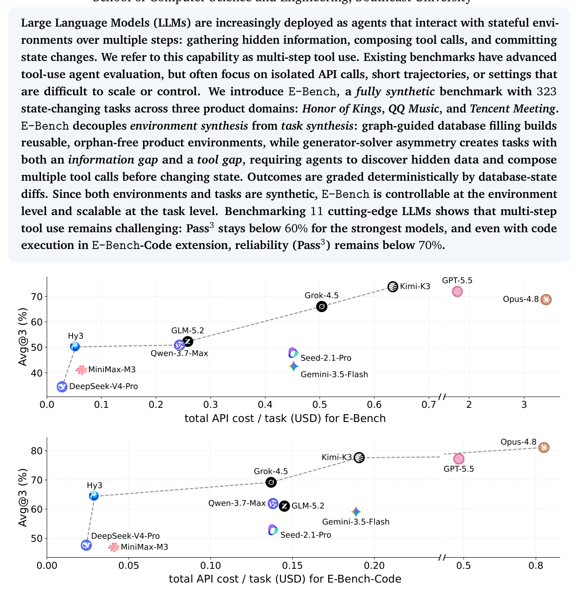
Figure 1 | Avg@3 (%) versus total API cost per task (USD) under E-Bench (top) and E-Bench-Code (bottom). Calculation details are included in the Appendix A.4. The dashed line marks the Pareto (cost-efficiency) frontier.
arXiv:2607.23722v1 [cs.AI] 26 Jul 2026arXiv:2607.23722v1 [cs.AI] 26 Jul 2026
∗Equal contribution. †Correspondence to maxmpan@tencent.com. To prevent benchmark-specific training or overfitting, we do not open-source the E-Bench environments or tasks.
∗同等贡献。†通信邮箱：maxmpan@tencent.com。为防止本基准被用于定向训练或过拟合，我们不公开 E-Bench 的环境与任务。
-Bench: Benchmarking Multi-Step Tool-Use Agents in Real-World Product Scenarios
-Bench：真实产品场景中的多步工具使用智能体基准评测
1. Introduction1. 引言
Currently, Large Language Models (LLMs) have moved beyond answering self-contained prompts and are increasingly deployed as agents that interact with external environments to accomplish complex tasks (Anthropic, 2024; Patil et al., 2024; Singh et al., 2025; Yao et al., 2022). Success then requires more than a plausible response: an LLM agent must repeatedly identify missing information, decide which tools to invoke, integrate observations across steps, and commit changes back to a stateful environment (we term this multi-step tool use). This shift from answering to acting calls for benchmarks that evaluate agentic behavior under realistic interaction constraints, rather than isolated language understanding or single-step tool selection.
如今，大语言模型（LLM）已不再局限于回答自包含的提问，而是越来越多地作为智能体部署，通过与外部环境交互来完成复杂任务（Anthropic, 2024; Patil et al., 2024; Singh et al., 2025; Yao et al., 2022）。此时，仅给出看似合理的回答已远远不够：LLM 智能体必须反复识别缺失信息、决定调用哪些工具、跨步骤整合观察结果，并把变更提交回有状态的环境——我们称之为多步工具使用。这一从「回答」到「行动」的转变，要求基准能在真实交互约束下评估智能体行为，而非只考察孤立的语言理解或单步工具选择。
This paradigm underlies many of the most valuable real-world applications, from operating software and querying databases to orchestrating business workflows, yet such environment-grounded agency remains hard to evaluate systematically. Recent benchmarks probe models’ ability to invoke APIs correctly (Patil et al., 2024, 2025; Qin et al., 2024) and to operate in realistic web, OS, and software- engineering environments (Jimenez et al., 2024; Trivedi et al., 2024; Zhou et al., 2024). While
这一范式支撑着许多最具价值的现实应用——从操作软件、查询数据库到编排业务流程——但这种扎根于环境的智能性仍难以系统评估。近期的基准考察了模型正确调用 API 的能力（Patil et al., 2024, 2025; Qin et al., 2024），以及在真实网页、操作系统和软件工程环境中运作的能力（Jimenez et al., 2024; Trivedi et al., 2024; Zhou et al., 2024）。然而，这些基准
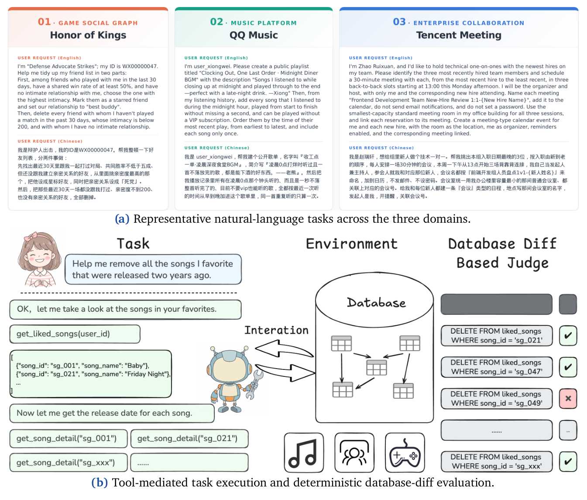
Figure 2 | Overview of E-Bench. (a) Natural-language tasks span diverse product domains. (b) Agents use domain-specific tools in fully-synthetic stateful environments, and are evaluated by comparing database-state diffs to ground truth.
these reveal weaknesses in planning, tool grounding, and long-horizon execution, they center on short tool-use trajectories (Mialon et al., 2023; Yao et al., 2024), isolated API calls (Patil et al., 2024, 2025), or static QA (Hendrycks et al., 2021; Rein et al., 2024; Yang et al., 2018) without environment modification, and thus fail to capture agentic capability under partial observability, heterogeneous tools, long-horizon dependencies, and precise state-changing operations.
虽揭示了模型在规划、工具落地（tool grounding）与长程执行上的不足，但大多聚焦于较短的工具体验轨迹（Mialon et al., 2023; Yao et al., 2024）、孤立的 API 调用（Patil et al., 2024, 2025），或无需修改环境的静态问答（Hendrycks et al., 2021; Rein et al., 2024; Yang et al., 2018），因而无法刻画部分可观测、工具异构、长程依赖与精确状态变更操作下的智能体能力。
Moreover, although benchmarks built on real systems offer rich, stateful interactions, they are hard to scale, expensive to annotate, sensitive to data-safety and privacy constraints, and unstable to reproduce as the underlying services evolve (Liu et al., 2024; Xu et al., 2024; Yao et al., 2024). They can also be difficult to decontaminate: when tasks depend on public facts, familiar interfaces, or recurring workflows, model performance may reflect prior exposure rather than the ability to actively acquire hidden state through tools. A faithful benchmark must therefore present a complete, controllable environment in which the model cannot shortcut the intended reasoning, while remaining cheap to scale and safe to release.
此外，建立在真实系统之上的基准虽然提供了丰富且有状态的交互，却难以扩展、标注成本高、受数据安全与隐私约束掣肘，且随底层服务演进而难以稳定复现（Liu et al., 2024; Xu et al., 2024; Yao et al., 2024）。这类基准还难以去污染：任务一旦依赖公开事实、常见界面或重复性工作流，模型的表现便可能源于此前见过类似内容，而非通过工具主动获取隐藏状态的能力。因此，忠实的基准必须呈现完整、可控的环境，令模型无从绕开预定推理路径，同时保持扩展成本低、发布安全。
To this end, we introduce E-Bench, a fully synthetic benchmark for evaluating multi-step tool-use agents. E-Bench comprises 323 state-changing tasks spanning three domains modeled after real products: Honor of Kings, QQ Music, and Tencent Meeting. As illustrated in Figure 2, these tasks take the form of realistic natural-language requests (Figure 2a) and are solved through tool-mediated interaction with a stateful product environment, with correctness determined by exact database-state differences (Figure 2b).
为此，我们提出 E-Bench——一个用于评测多步工具使用智能体的全合成基准。E-Bench 包含 323 个状态变更任务，覆盖三个以真实产品为原型的领域：王者荣耀（Honor of Kings）、QQ 音乐（QQ Music）与腾讯会议（Tencent Meeting）。如图 2 所示，这些任务以贴近现实的自然语言请求呈现（图 2a），需通过与有状态产品环境的工具中介交互来求解，正确性由数据库状态的精确差异判定（图 2b）。
E-Bench is built in two decoupled stages: environment synthesis and task synthesis. For each domain, we first construct a reusable, fully mocked product environment rather than task-specific state snapshots, and then synthesize many state-changing tasks from this shared environment. In the first stage, we synthesize a large, diverse, and consistent database via graph-guided database filling. Specifically, we construct a table-dependency graph from the relational schema and use a powerful LLM to populate tables in topological order, enforcing referential integrity by construction. This yields an orphan-free, stateful product world rather than tool stubs or task-local fixtures. In the second stage, a privileged task generator with SQL and code access explores this environment and authors tasks through a realistic product loop: inspect data →decide targets →modify state →summarize intent. For each task, it records the induced database change as a ground-truth diff and annotates the exercised tool-use capabilities. Since tasks are derived from a shared reusable environment, new tasks can be generated by varying target entities, constraints, and reasoning patterns without redesigning the underlying data. Moreover, because all tasks share a complete underlying environment rather than task-specific, incomplete local snapshots, solvers have greater room to explore the available context, better reflecting the contextual richness encountered in real-world scenarios.
E-Bench 的构建分为两个解耦的阶段：环境合成与任务合成。对每个领域，我们先构建可复用、完全模拟（mocked）的产品环境，而非任务特定的状态快照，再从这一共享环境合成大量状态变更任务。第一阶段通过图引导的数据库填充，合成一个规模大、多样且一致的数据库：从关系模式构建表依赖图，用强大的 LLM 按拓扑序填充各表，从而在构造上保证引用完整性。由此得到的不是工具桩或任务本地夹具，而是一个无孤儿记录、有状态的产品世界。第二阶段中，拥有 SQL 与代码权限的特权任务生成器探索该环境，并经由贴近真实产品的循环编写任务：检查数据 → 决定目标 → 修改状态 → 总结意图。每个任务都会记录其引发的数据库变更作为真值差异（ground-truth diff），并标注所锻炼的工具使用能力。由于任务源自共享的可复用环境，只需改变目标实体、约束与推理模式即可派生新任务，无需重新设计底层数据。而且，所有任务共享完整的底层环境而非任务特定、残缺的本地快照，求解者因此拥有更大的探索空间，更贴近真实场景中上下文的丰富程度。
During benchmarking, the agent (the solver) has no direct database or SQL access. In the base E-Bench setting, it is also denied code execution, while E-Bench-Code grants this capability. This generator-solver asymmetry creates an information gap and a tool gap: solvers must discover hidden data, reason from partial observations, and compose available tools (e.g., issuing parallel independent calls) to produce the correct state change. Outcomes are graded deterministically by comparing the final database state with the ground-truth diff, without any LLM judge.
基准评测期间，智能体（求解器）没有直接的数据库或 SQL 访问权限；基础 E-Bench 设置还禁止其执行代码，E-Bench-Code 则开放该能力。这种生成器-求解器不对称造成了信息鸿沟与工具鸿沟：求解器必须发现隐藏数据、基于部分观察进行推理，并组合可用工具（例如并行发出相互独立的调用）以产生正确的状态变更。结果由最终数据库状态与真值差异的确定性比较来判分，全程不使用 LLM 裁判。
By evaluating agents through multi-step tool interaction with simulated product environments, E-Bench measures their ability to gather necessary information, coordinate tool calls, and decide what to retrieve before acting. Since both environments and tasks are synthetically constructed rather than drawn from real users or live services, E-Bench is controllable at the environment level and scalable at the task level for training-oriented use. Our contributions are as follows:
通过让智能体与模拟产品环境进行多步工具交互，E-Bench 度量其收集必要信息、协调工具调用以及在行动前决定检索内容的能力。环境与任务均为合成构造，而非取自真实用户或在线服务，因此 E-Bench 在环境层面可控、在任务层面可扩展，适合面向训练的用途。我们的贡献如下：
(1) We introduce E-Bench, a fully synthetic benchmark for systematic evaluation of LLM agents on
(1) 我们提出 E-Bench，一个用于系统评测 LLM 智能体的全合成基准，聚焦
multi-step tool use, which comprises 323 state-changing tasks across three domains modeled after real corporate products.
多步工具使用：基准包含三个以真实企业产品为原型领域的 323 个状态变更任务。
(2) We design a fully synthetic construction pipeline that decouples environment synthesis from task synthesis, enabling a single reusable, integrity-preserving environment to support scalable task generation. Evaluation uses deterministic database-state diffs rather than LLM judges.
(2) 我们设计了一条完全合成的构建流水线，将环境合成与任务合成解耦，使单个可复用、保持完整性的环境得以支撑可扩展的任务生成。评测采用确定性的数据库状态差异，而非 LLM 裁判。
(3) We benchmark 11 cutting-edge LLMs as tool-use agents and find that multi-step tool use remains far from solved: the strongest model (Kimi-K3) reaches only 73.8% Avg@3, while consistency-oriented reliability, measured by Pass3, remains below 60%. Granting code execution in E-Bench-Code improves accuracy, but performance consistency remains limited with Pass3 below 70%.
(3) 我们以工具使用智能体的形式对 11 个前沿 LLM 进行基准评测，发现多步工具使用远未被解决：最强模型（Kimi-K3）仅达到 73.8% 的 Avg@3，而以 Pass3 衡量的一致性导向可靠性仍低于 60%。在 E-Bench-Code 中开放代码执行可提升准确率，但性能一致性依旧有限，Pass3 低于 70%。
2. Related Work2. 相关工作
Tool-Use and Function-Calling Benchmarks. Early tool-use benchmarks evaluate whether models can select appropriate tools and generate well-formed calls. Gorilla (Patil et al., 2024) connects LLMs to large API collections, ToolLLM (Qin et al., 2024) scales instruction-following data to thousands of real-world APIs, and the Berkeley Function Calling Leaderboard (BFCL) (Patil et al., 2025) standardizes function-calling evaluation across single-call, parallel-call, multi-turn, and multi-step settings. These benchmarks are valuable for measuring API grounding and call-structure correctness, but they primarily view tool use as producing correct invocations. In contrast, E-Bench evaluates closed-loop interaction with a persistent environment, where agents must acquire information from observations, reason across steps, and execute actions whose effects modify backend product state.
工具使用与函数调用基准。早期的工具使用基准评估模型能否选择合适工具并生成格式良好的调用。Gorilla（Patil et al., 2024）将 LLM 接入大规模 API 集合；ToolLLM（Qin et al., 2024）把指令遵循数据扩展到数千个真实 API；Berkeley Function Calling Leaderboard（BFCL）（Patil et al., 2025）则在单调用、并行调用、多轮与多步设置下统一了函数调用评测。这些基准对度量 API 落地与调用结构正确性很有价值，但主要把工具使用视为「产生正确的调用」。相比之下，E-Bench 评测的是与持久环境的闭环交互：智能体必须从观察中获取信息、跨步骤推理，并执行会修改后端产品状态的动作。
Stateful Agent Environments for Tool Use Benchmarks. A second line of work evaluates agents in richer, stateful environments, but often compromises controllability, reusability, or automated construction. Benchmarks built on real or live MCP servers, such as MCP-Atlas (Bandi et al., 2026), MCP-Universe (Luo et al., 2025), MCP-Bench (Wang et al., 2026), and LiveMCPBench (Mo et al., 2025), provide high ecological validity but are difficult to reset, scale, and use for repeated state- changing evaluation. Controlled simulators avoid live services, yet often couple environments to individual tasks, as in AppWorld (Trivedi et al., 2024) and VitaBench (He et al., 2025). More broadly, benchmarks such as VitaBench (He et al., 2025), 𝜏-bench (Yao et al., 2024), ToolSandbox (Lu et al., 2025), and MCPMark (Wu et al., 2026) require substantial human or engineering effort to package user requests, annotate tasks, create ground truth, or build custom checkers respectively. MCPEval (Liu et al., 2025) moves toward automation by generating tasks from MCP tool specifications and verifying them through frontier-agent execution; however, it evaluates agents by alignment to verifier-generated tool-use trajectories, which can favor a particular solution path over the final outcome.
面向工具使用基准的有状态智能体环境。第二类工作在更丰富、有状态的环境中评测智能体，但往往在可控性、可复用性或自动化构建上有所妥协。构建在真实或在线 MCP 服务之上的基准，如 MCP-Atlas（Bandi et al., 2026）、MCP-Universe（Luo et al., 2025）、MCP-Bench（Wang et al., 2026）与 LiveMCPBench（Mo et al., 2025），生态效度高，却难以重置与扩展，也难以支撑反复的状态变更评测。受控模拟器避开了在线服务，却常把环境与单个任务耦合，如 AppWorld（Trivedi et al., 2024）与 VitaBench（He et al., 2025）。更广泛地说，VitaBench（He et al., 2025）、𝜏-bench（Yao et al., 2024）、ToolSandbox（Lu et al., 2025）与 MCPMark（Wu et al., 2026）等基准，分别需要可观的人力或工程投入来打包用户请求、标注任务、构造真值或编写定制检查器。MCPEval（Liu et al., 2025）则向自动化迈进：从 MCP 工具规范生成任务，并通过前沿智能体的执行来验证；但它以与验证器生成轨迹的对齐程度来评测智能体，可能偏袒特定解题路径而非最终结果。
E-Bench addresses these limitations by decoupling automatic environment and task construction: each domain is a reusable, controllable, database-backed product world shared across many closed- loop tasks. LLM agents then synthesize tasks by inspecting this environment, executing intended state changes, and recording verified database diffs as trajectory-agnostic ground truth, enabling deterministic grading without task-specific engineering or LLM-based evaluation.
E-Bench 通过解耦自动化的环境构建与任务构建来克服上述局限：每个领域是一个可复用、可控、由数据库支撑的产品世界，供众多闭环任务共享。LLM 智能体随后检查该环境、执行预期的状态变更，并把经核验的数据库差异记录为与轨迹无关的真值，据此合成任务；由此实现确定性判分，既无需任务特定的工程，也不依赖基于 LLM 的评测。
3. E-Bench: A Benchmark for Multi-Step Tool Use3. E-Bench：多步工具使用基准
3.1. Overview3.1. 总览
E-Bench follows one principle: evaluating multi-step tool use requires both a coherent environment and tasks that cannot be solved without interacting with it. To this end, E-Bench explicitly decouples
E-Bench 遵循一条原则：评测多步工具使用，既需要一个连贯的环境，也需要不与之交互就无法求解的任务。为此，E-Bench 显式地将
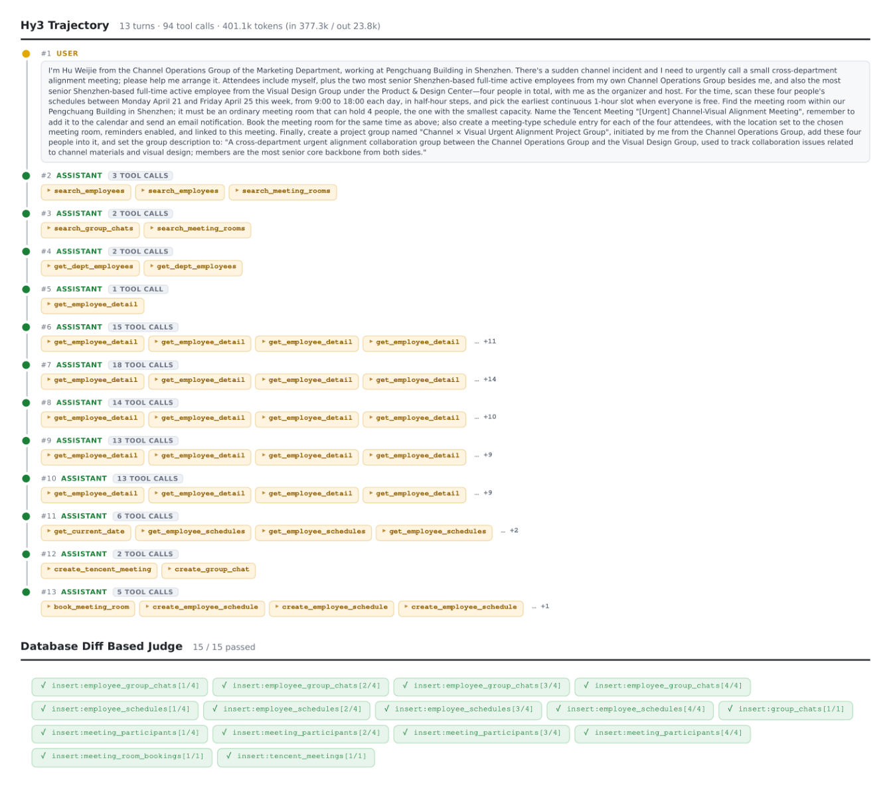
Figure 3 | Hy3 trajectory on the Tencent Meeting case. The model successfully coordinates participant selection, schedule search, room reservation, meeting creation, calendar updates, and group creation.
environment synthesis from task synthesis: instead of constructing a task-specific state snapshot for each task, we first build a reusable, fully mocked product environment for each domain, and then synthesize many state-changing tasks from this shared environment state.
环境合成与任务合成解耦：不为每个任务构建任务特定的状态快照，而是先为每个领域构建可复用、完全模拟的产品环境，再从这一共享环境状态合成大量状态变更任务。
The construction of E-Bench therefore has two stages. First, we construct a purely synthetic product environment from a relational schema and populate it through graph-guided database filling, yielding a coherent, orphan-free database-backed product world rather than isolated tool stubs or task-local fixtures. Second, we synthesize tasks on top of the pre-populated environment through a controlled generator-solver asymmetry: the generator can inspect the full database and use privileged tools, whereas the solver observes the environment only through restricted domain-specific MCP tools. This introduces an information gap and a tool gap by design, forcing solvers to recover hidden state, compose multi-step and often parallel tool calls, and execute verifiable state changes. Because tasks are generated from a reusable shared environment rather than hand-authored with task-specific data fixtures, task construction becomes scalable: new tasks can be derived by varying target entities, constraints, and reasoning patterns without redesigning the underlying environment
因此，E-Bench 的构建分为两个阶段。第一，从关系模式出发构建纯合成的产品环境，并通过图引导的数据库填充数据，得到连贯、无孤儿记录、由数据库支撑的产品世界，而非孤立的工具桩或任务本地夹具。第二，通过受控的生成器-求解器不对称在该预填充环境之上合成任务：生成器可检查完整数据库并使用特权工具，求解器则只能经由受限的领域专用 MCP 工具观察环境。这在设计上引入了信息鸿沟与工具鸿沟，迫使求解器恢复隐藏状态、组合多步且常常并行的工具调用，并执行可验证的状态变更。由于任务由可复用的共享环境生成，而非以任务特定的数据夹具手工编写，任务构建得以规模化：只需改变目标实体、约束与推理模式即可派生新任务，无需重新设计底层环境
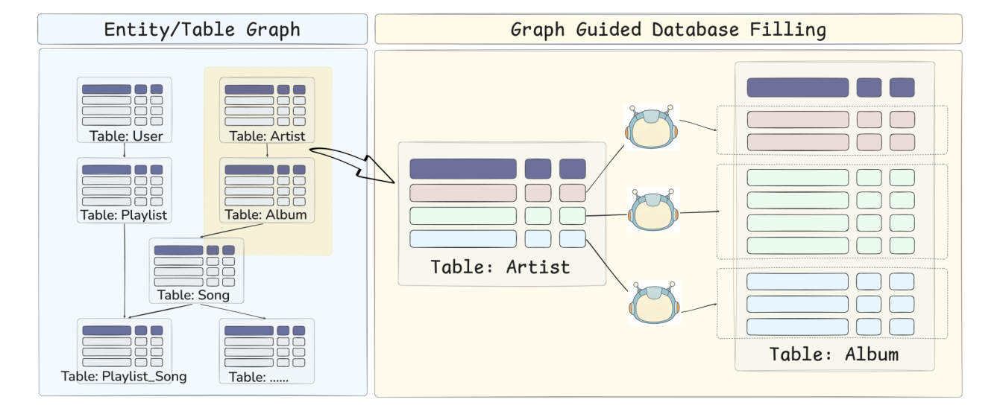
Figure 4 | Demonstration of graph-guided database filling and constrained context-aware synthesis.
data for each task. E-Bench instantiates this pipeline across three domains—Honor of Kings, QQ Music, and Tencent Meeting—producing 323 state-changing tasks. We show one task example from Tencent Meeting in Figure 3 with more included in the Appendix B.
数据。E-Bench 将这一流水线实例化于三个领域——王者荣耀、QQ 音乐与腾讯会议——共产生 323 个状态变更任务。我们在图 3 中给出一个腾讯会议的任务示例，更多示例见附录 B。
The remainder of this section is organized as follows. Section 3.2 details graph-guided environment construction; Section 3.3 describes automatic task construction and deterministic evaluation; Sec- tion 3.4 introduces E-Bench-Code, which grants solvers code execution to partially close the tool gap; and Section 3.5 presents the comprehensive statistical summarization of E-Bench. Together, these designs enable E-Bench to test full-information acquisition and multi-step parallel tool use under realistic product-state feedback.
本节其余部分安排如下。3.2 节详述图引导的环境构建；3.3 节描述自动任务构建与确定性评测；3.4 节介绍 E-Bench-Code，它授予求解器代码执行以部分弥合工具鸿沟；3.5 节给出 E-Bench 的全面统计汇总。这些设计共同使 E-Bench 能在真实的产品状态反馈下，考察完整信息获取与多步并行工具使用。
3.2. Reliable Environment Construction3.2. 可靠的环境构建
E-Bench first constructs, for each domain, a product environment fully simulated by a database. Each domain is defined by a set of tables, where each table corresponds to a concrete entity or relation. For example, in the music domain, tables represent users, artists, albums, songs, playlists, playlist-song relations, and user favorites; in the meeting domain, they represent employees, departments, meeting rooms, meetings, participants, and employee schedules. Each table further contains fields describing entity attributes, such as an album’s release date, a song’s lyrics and copyright status, or a meeting’s start time and room location. The goal of environment construction is therefore not to generate a small set of plausible examples, but to build a product-level data world with diverse entity types, multi-hop relations, and historical states.
E-Bench 首先为每个领域构建一个完全由数据库模拟的产品环境。每个领域由一组表定义，每张表对应一个具体实体或关系：音乐领域的表表示用户、艺术家、专辑、歌曲、歌单、歌单-歌曲关系与用户收藏；会议领域的表表示员工、部门、会议室、会议、参会者与员工日程。每张表还包含描述实体属性的字段，如专辑发行日期、歌曲歌词与版权状态、会议开始时间与会议室位置。因此，环境构造的目标不是生成一小组看似合理的样例，而是构建具备多样实体类型、多跳关系与历史状态的产品级数据世界。
Graph-Guided Database Filling. Tables within each domain are linked by explicit foreign-key dependencies: for example, albums reference existing artists, songs reference existing albums, and playlist-song relations reference both existing playlists and songs. These dependencies determine record validity, since a row is meaningful only when its referenced entities exist and are semantically consistent. E-Bench therefore converts each relational schema into a table-level dependency graph (see also the left panel in Figure 4), initializes an empty database with primary-key and foreign-key
图引导的数据库填充。每个领域内的表由显式的外键依赖相连：如专辑引用已存在的艺术家，歌曲引用已存在的专辑，歌单-歌曲关系则同时引用已存在的歌单与歌曲。这些依赖决定记录的有效性——只有当被引用实体存在且语义一致时，一行记录才有意义。为此，E-Bench 将每个关系模式转换为表级依赖图（另见图 4 左侧面板），以主键与外键
constraints, enables foreign-key checking, and populates tables in topological order. Root tables such as those for artists, departments, and meeting rooms are generated first, followed by downstream tables only after their dependencies are materialized. This process guarantees referential integrity by construction rather than repairing violations after free-form generation.
约束初始化空数据库，启用外键检查，并按拓扑序填充各表：先生成艺术家、部门、会议室等根表，待依赖全部物化后再生成下游表。这一过程在构造上保证引用完整性，而非在自由生成之后修补违规。
Constrained Context-Aware Synthesis. During database synthesis, E-Bench uses a powerful LLM as a constrained synthesizer rather than asking it to generate an entire database freely. When populating a table, the model receives the table schema, key annotations, generation requirements, global domain context, and relevant existing records. For tables dependent on upstream entities, it generates child records conditioned on each parent, like shown in Figure 4. For example, when creating playlist-song relations, the model observes the current playlist and sampled candidate songs, and may issue read-only queries if additional candidates are needed. This process is constrained by tool-mediated interaction with the database. The model inserts records only through insertion tools, allowing the database to enforce primary-key uniqueness and foreign-key validity at insertion time. For downstream tables that must select from existing objects, the model is forced to query candidate entities from the current database state rather than inventing identifiers. The system also samples relevant records and retrieves parent-related context along the dependency graph, keeping prompts compact while preserving cross-table consistency.
受约束的上下文感知合成。数据库合成过程中，E-Bench 将强大的 LLM 用作受约束的合成器，而非任其自由生成整个数据库。填充某张表时，模型会收到该表的模式、键标注、生成要求、全局领域上下文及相关既有记录。对依赖上游实体的表，模型以每个父记录为条件生成子记录（如图 4 所示）：创建歌单-歌曲关系时，模型观察当前歌单与抽样出的候选歌曲，需要更多候选时可发出只读查询。整个过程通过与数据库的工具中介交互加以约束：模型只能经插入工具写入记录，使数据库能在插入时强制主键唯一性与外键有效性；对必须从既有对象中选取的下游表，模型被迫从当前数据库状态查询候选实体，而非凭空编造标识符。系统还沿依赖图抽样相关记录、检索父实体上下文，在保持跨表一致的同时使提示保持紧凑。
Post-Generation Validation and Repair. After database population, E-Bench applies deterministic validation and repair scripts to ensure the fidelity and integrity of the constructed environment. These scripts correct semantic errors that may remain in LLM-synthesized data, such as inconsistent temporal ordering, incorrect aggregate counts, or mismatched status fields, by verifying and automatically repairing cross-field, cross-table, and temporal constraints, improving the consistency and quality of the final environment.
生成后校验与修复。数据库填充完成后，E-Bench 运行确定性的校验与修复脚本，确保所构建环境的保真度与完整性。这些脚本通过校验并自动修复跨字段、跨表与时间维度的约束，纠正 LLM 合成数据中可能残留的语义错误——如时间顺序不一致、聚合计数错误或状态字段不匹配——从而提升最终环境的一致性与质量。
Domain-Specific Tool Construction. After validation, E-Bench builds domain-specific MCP tools on top of the database. These tools function as CRUD interfaces over the underlying database, but expose product-level semantics to agents, such as searching songs, viewing playlists, adding favorites, querying meeting rooms, creating meetings, and updating schedules. Because all tools operate over the same pre-populated, referentially complete database, agents receive realistic product feedback during interaction: a retrieved song is linked to its album and artist, a meeting is linked to its participants and room, and a playlist is linked to songs that actually exist. We further validate the implementations of these MCP tools with unit tests to ensure that tool behavior remains consistent with database semantics.
领域专用工具构建。校验完成后，E-Bench 在数据库之上构建领域专用 MCP 工具。这些工具相当于底层数据库上的 CRUD 接口，却向智能体暴露产品级语义——搜索歌曲、查看歌单、添加收藏、查询会议室、创建会议、更新日程等。由于所有工具都运行在同一个预填充、引用完整的数据库之上，智能体在交互中获得的是真实的产品反馈：检索到的歌曲关联其专辑与艺术家，会议关联其参会者与会议室，歌单中的歌曲真实存在。我们还以单元测试进一步验证这些 MCP 工具的实现，确保工具行为与数据库语义一致。
Overall, our carefully designed construction pipeline avoids the incompleteness common in task- coupled benchmarks, in which the benchmark environment may contain merely the objects needed for a specific task. For example, an agent may retrieve an entity but fail to access its dependencies or related context, or encounter downstream records that reference missing upstream entities, i.e., orphan records. Through foreign-key constraints, graph-guided database filling, constrained context- aware synthesis, controlled insertion, as well as deterministic validation and repair, E-Bench ensures that dependency fields are resolved during record generation and that orphan records are ruled out by construction. The result is not merely a reliable fully synthesized database, but a structurally complete, cross-table consistent, and tool-interactive product state space that provides a stable foundation for automatic task synthesis.
总体而言，我们精心设计的构建流水线避免了任务耦合基准中常见的不完整性——此类基准的环境可能只包含特定任务所需的对象。例如，智能体可能检索到某个实体，却无法访问其依赖或相关上下文；或遇到引用了缺失上游实体的下游记录，即孤儿记录。通过外键约束、图引导的数据库填充、受约束的上下文感知合成、受控插入以及确定性校验与修复，E-Bench 确保依赖字段在记录生成时即被解析，孤儿记录在构造上即被排除。其结果不只是一个可靠的完全合成数据库，而是一个结构完整、跨表一致、可与工具交互的产品状态空间，为自动任务合成提供了稳定基础。
3.3. Scalable Task Construction3.3. 可扩展的任务构建
The second stage turns each environment into benchmark tasks under one principle: a task is worth including only if solving it genuinely requires interacting with the environment. E-Bench enforces this through a controlled asymmetry between task generation and solving: during generation, a strong task generator (Claude Opus 4.7) works on a temporary database copy and may inspect global state and run code, whereas at evaluation the solver sees only a natural-language request and the public domain tools. This lets E-Bench author tasks that are deterministically solvable yet cannot be
第二阶段在一条原则下把每个环境转化为基准任务：只有真正需要与环境交互才能求解的任务才值得收录。E-Bench 通过任务生成与求解之间受控的不对称来贯彻这一原则：生成时，强大的任务生成器（Claude Opus 4.7）在数据库临时副本上工作，可检查全局状态并运行代码；评测时，求解器只能看到一条自然语言请求与公开的领域工具。这使 E-Bench 能编写出确定性可解却无法
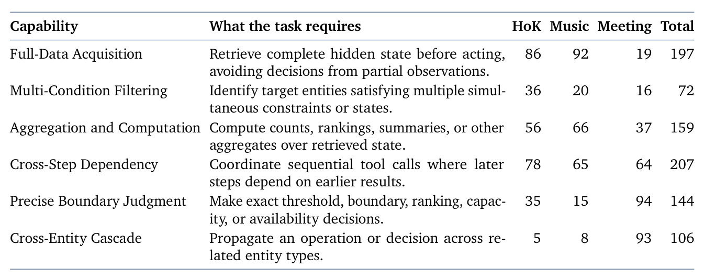
Table 1 | Capability types annotated on E-Bench tasks. Each task may compose multiple capabilities.
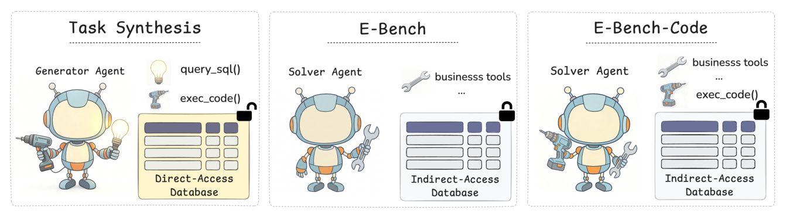
Figure 5 | Demonstration of the information gap and tool gap between generator and solver under E-Bench and E-Bench-Code respectively.
shortcut, forcing agents to recover hidden information and induce the required state change through ordinary tool calls. The asymmetry has two faces—an information gap and a tool gap, introduced by construction—which we describe next (see also Figure 5).
靠走捷径求解的任务，迫使智能体恢复隐藏信息，并通过普通工具调用引发所需的状态变更。这种不对称有两副面孔——设计上引入的信息鸿沟与工具鸿沟——下文将分别描述（另见图 5）。
The Information Gap. The information gap withholds global database state from the solver, so a task cannot be answered from its prompt alone. Seeing the full schema and read-only query_sql, the generator can define tasks whose targets depend on latent state rather than named values—e.g., all songs meeting a hidden condition, the intersection of two sets, the top entity under an aggregation, entities several foreign-key hops away, or the earliest feasible meeting slot. This knowledge is never leaked: an intent-rewriting step keeps user-specified values explicit (a playlist name, a date range) but replaces database-derived values with the rule producing them, so the query says “add the unavailable songs in my favorites” rather than listing song IDs or their count. The gap thus targets full-information acquisition: it tests whether an agent can actively gather the complete hidden target set before acting, rather than commit prematurely on partial evidence.
信息鸿沟。信息鸿沟对求解器隐去全局数据库状态，任务因而无法仅凭提示作答。生成器能看到完整模式与只读的 query_sql，因此可以定义目标取决于潜在状态而非具名值的任务——例如满足某隐藏条件的所有歌曲、两个集合的交集、某聚合下的头名实体、沿外键多跳可达的实体，或最早可行的会议时段。这类知识从不泄露：意图改写步骤保留用户指定的值（歌单名、日期范围），但把由数据库导出的值替换为产生它们的规则，于是请求写的是「把我收藏中那些不可用的歌曲加上」，而非列出歌曲 ID 或其数量。因此，信息鸿沟针对的是完整信息获取：它检验智能体能否在行动前主动收集完整的隐藏目标集，而非基于部分证据仓促行动。
The Tool Gap. The tool gap makes the generator computationally stronger than the base solver. During task generation, the strong task generator can invoke internal tools such as query_sql and exec_code: the former accesses the database directly, while the latter exposes public tools as callable functions, enabling programs that paginate results, compute aggregates, perform set operations, traverse multi-hop relations, and chain dependent writes. This enables the construction of tasks whose ground truth requires genuine computation rather than a single domain-specific tool call. At
工具鸿沟。工具鸿沟使生成器在计算能力上强于基础求解器。任务生成期间，强大的任务生成器可调用 query_sql 与 exec_code 等内部工具：前者直接访问数据库，后者把公开工具暴露为可调用函数，支持编写能分页结果、计算聚合、执行集合运算、遍历多跳关系并串联依赖写入的程序。由此可以构建真值需要真正计算、而非单次领域专用工具调用即可得到的任务。在
evaluation time, internal tools are removed, leaving agents with only business-level domain-specific MCP tools; the solver must therefore reproduce the target outcome through ordinary tool calls. This gap tests whether agents can correctly compose and order multi-step tool use—including issuing independent parallel tool calls when permitted by the environment—to perform computation they cannot directly offload. E-Bench-Code partially closes this gap by granting solvers code execution, and comparing the two settings quantifies how much code execution raises the performance ceiling.
评测时，内部工具被移除，智能体只剩业务级的领域专用 MCP 工具；求解器必须通过普通工具调用复现目标结果。这一鸿沟检验智能体能否正确组合并排序多步工具使用——包括在环境允许时并行发出相互独立的工具调用——以完成其无法直接外包的计算。E-Bench-Code 通过授予求解器代码执行来部分弥合这一鸿沟；对比两种设置，即可量化代码执行能把性能上限抬高多少。
Capability Taxonomy as Synthesis Guidance. With the two gaps, we further define six capability types for generated tasks as listed in Table 1. These capabilities arise naturally from our benchmark design and fall into two broad groups. The first group, namely Full-Data Acquisition, Multi-Condition Filtering, and Aggregation and Computation, is driven primarily by the information gap: agents must retrieve, aggregate, and compute over large volumes of hidden data. The tool gap further amplifies the difficulty of these tasks, but closing it can partially alleviate the burden. The second group, Cross-Step Dependency, Precise Boundary Judgment, and Cross-Entity Cascade, on the other hand, places greater emphasis on reasoning and decision making, requiring agents to determine the next action from the information accumulated so far.
作为合成指导的能力分类。借助这两种鸿沟，我们进一步为生成的任务定义了六种能力类型（见表 1）。这些能力自然源自基准设计，可归为两大组：第一组——全量数据获取（Full-Data Acquisition）、多条件过滤（Multi-Condition Filtering）与聚合计算（Aggregation and Computation）——主要由信息鸿沟驱动，智能体必须对大量隐藏数据进行检索、聚合与计算，工具鸿沟进一步放大其难度，但弥合该鸿沟可部分减轻负担；第二组——跨步依赖（Cross-Step Dependency）、精确边界判断（Precise Boundary Judgment）与跨实体级联（Cross-Entity Cascade）——则更强调推理与决策，要求智能体根据已积累的信息决定下一步动作。
Task Generation and Validation. Each task is generated through a product-oriented loop—inspect data →decide targets →modify state →summarize intent—for a sampled user and capability type(s). We snapshot the database before and after the generator’s writes, record the exact state diff as
任务生成与校验。每个任务都经由面向产品的循环——检查数据 → 决定目标 → 修改状态 → 总结意图——针对抽样的用户与能力类型生成。我们在生成器写入前后各对数据库做一次快照，将精确的状态差异记录为
ground truth, and discard candidates with no state change, unparseable intent, or excessive tool use. Surviving tasks are then validated by three strong validators—GPT-5.5, Claude Opus 4.7, and GLM-5.1—given the same full-information tools as the generator, query_sql and exec_code. This focuses validation on the correctness of the recorded state change rather than hidden-information recovery. We accept a task only if at least two validators reproduce changes consistent with the ground truth, and further filter out tasks solved easily by a weak baseline. The remaining tasks are stratified by capability type to keep a balanced mix of reasoning patterns.
真值，并丢弃没有状态变更、意图不可解析或工具使用过度的候选任务。存留的任务再交由三个强大的校验器——GPT-5.5、Claude Opus 4.7 与 GLM-5.1——在与生成器相同的全信息工具（query_sql 与 exec_code）下校验，使校验聚焦于所记录状态变更的正确性，而非隐藏信息的恢复。仅当至少两个校验器复现出与真值一致的变更时，任务才被接受，并进一步滤除弱基线即可轻松解决的任务。剩余任务按能力类型分层，以保持推理模式的均衡组合。
Finally, each accepted task is stored as a self-contained JSON specification containing the user query, expected database changes, and exercised capability types. Since correctness is checked against deterministic database-state changes rather than an LLM judge, evaluation is stable and less sensitive to semantic-judging variance.
最后，每个被接受的任务都以自包含的 JSON 规范存储，内含用户请求、预期的数据库变更及所锻炼的能力类型。正确性依据确定性的数据库状态变化核验，而非依赖 LLM 裁判，因此评测稳定，对语义裁判的方差也不敏感。
3.4. E-Bench-Code: Closing the Tool Gap3.4. E-Bench-Code：弥合工具鸿沟
Because E-Bench withholds the code-execution capability from the solver, a tool gap remains between the strong task generator and the solver (Section 3.3). Our extension E-Bench-Code partially closes it by granting the solver the generator’s exec_code tool, with which the agent writes Python that calls the domain-specific MCP tools as inner-functions—paginating, aggregating, and performing set operations programmatically instead of manually orchestrating long call sequences. All else is held fixed (tasks, tools, database copies, and the state-diff evaluator), so any performance difference is attributable to this interface.
由于 E-Bench 不向求解器开放代码执行能力，强大的任务生成器与求解器之间仍存在工具鸿沟（3.3 节）。我们的扩展 E-Bench-Code 把生成器的 exec_code 工具授予求解器，从而部分弥合这一鸿沟：智能体编写 Python，将领域专用 MCP 工具当作内部函数调用——以编程方式完成分页、聚合与集合运算，而非手工编排漫长的调用序列。其余一切保持不变（任务、工具、数据库副本与状态差异评测器），因此任何性能差异都可归因于这一接口。
Importantly, E-Bench-Code closes the tool gap but not the information gap: exec_code exposes only the business-level domain-specific APIs, not query_sql or raw database access, so agents must still discover hidden targets through the observable environment. The two settings thus isolate complementary abilities: E-Bench tests manual coordination over extremely long multi-step tool-call sequences, whereas E-Bench-Code tests whether agents extract the relevant information. Comparing them reveals how much difficulty stems from orchestration mechanics versus reasoning about what to retrieve.
值得注意的是，E-Bench-Code 弥合的是工具鸿沟而非信息鸿沟：exec_code 只暴露业务级的领域专用 API，不提供 query_sql 或原始数据库访问，智能体仍须通过可观察的环境发现隐藏目标。两种设置由此分别隔离了互补的能力：E-Bench 检验对超长多步工具调用序列的手工协调，E-Bench-Code 则检验智能体能否提取相关信息。对比二者即可揭示：困难有多少来自编排机制，又有多少来自对「检索什么」的推理。
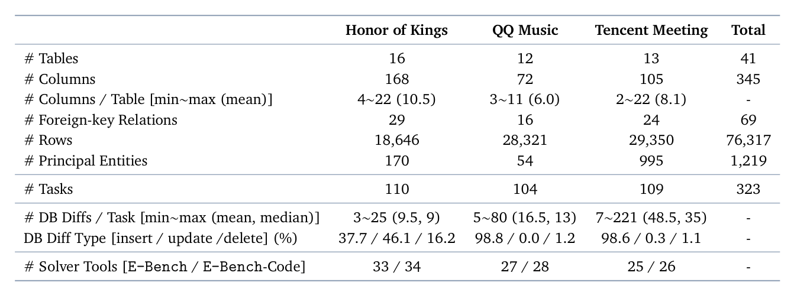
Table 2 | Per-domain statistics of E-Bench. “Principal Entities” stands for “users” for Honor of Kings and QQ Music, and “employees” for Tencent Meeting; “DB Diff” stands for the ground-truth database changes; and “Solver Tools” stands for MCP tools available to the solver, where E-Bench-Code additionally grants the exec_code tool (one more MCP tool per domain). Note that there is not DB Diff of update type for QQ Music by environment desgin.表 2 汇总了所构建环境与任务的规模和多样性。每个领域都构成一个连贯的产品世界，而非一撮单薄的工具桩：合成数据库包含 12 至 16 张表，由 16 至 29 个外键关系相连，共 72 至 168 列，每表 2 至 22 列（平均 6.0 至 10.5）。填充这些模式后，每个领域得到 18.6K 至 29.4K 行（共 76.3K 行）、超过 0.6M 个数据单元格，数据围绕 170 个用户（王者荣耀）、54 个用户（QQ 音乐）与 995 名员工（腾讯会议），以及引用它们的英雄、歌曲、会议等实体组织。由于任务从这个共享、预填充的状态合成，而非出自任务本地夹具，每个环境支撑约一百个不同任务。各领域的设计目标如下：
3.5. Benchmark Statistics3.5. 基准统计
Table 2表 2 汇总了所构建环境与任务的规模和多样性。每个领域都构成一个连贯的产品世界，而非一撮单薄的工具桩：合成数据库包含 12 至 16 张表，由 16 至 29 个外键关系相连，共 72 至 168 列，每表 2 至 22 列（平均 6.0 至 10.5）。填充这些模式后，每个领域得到 18.6K 至 29.4K 行（共 76.3K 行）、超过 0.6M 个数据单元格，数据围绕 170 个用户（王者荣耀）、54 个用户（QQ 音乐）与 995 名员工（腾讯会议），以及引用它们的英雄、歌曲、会议等实体组织。由于任务从这个共享、预填充的状态合成，而非出自任务本地夹具，每个环境支撑约一百个不同任务。各领域的设计目标如下：
| Honor of Kings | QQ Music | Tencent Meeting | Total | |
|---|---|---|---|---|
| # Tables | 16 | 12 | 13 | 41 |
| # Columns | 168 | 72 | 105 | 345 |
| # Columns / Table [min∼max (mean)] | 4∼22 (10.5) | 3∼11 (6.0) | 2∼22 (8.1) | - |
| # Foreign-key Relations | 29 | 16 | 24 | 69 |
| # Rows | 18,646 | 28,321 | 29,350 | 76,317 |
| # Principal Entities | 170 | 54 | 995 | 1,219 |
| # Tasks | 110 | 104 | 109 | 323 |
| # DB Diffs / Task [min∼max (mean, median)] | 3∼25 (9.5, 9) | 5∼80 (16.5, 13) | 7∼221 (48.5, 35) | - |
| DB Diff Type [insert / update /delete] (%) | 37.7 / 46.1 / 16.2 | 98.8 / 0.0 / 1.2 | 98.6 / 0.3 / 1.1 | - |
| # Solver Tools [E-Bench / E-Bench-Code] | 33 / 34 | 27 / 28 | 25 / 26 | - |
• Honor of Kings: A MOBA game platform covering player social interactions, team management, room-based matchmaking, and match review. Agents can query the current user’s players, heroes, ranks, friends, teams, rooms, and match records, and perform actions such as adding friends, managing blacklists, creating or dissolving rooms, sending or responding to room invitations, approving team applications, favoriting matches, and purchasing heroes.
• 王者荣耀：一个 MOBA 游戏平台，覆盖玩家社交、战队管理、房间匹配与对局回顾。智能体可查询当前用户的玩家、英雄、段位、好友、战队、房间与对局记录，并执行加好友、管理黑名单、创建或解散房间、发送或响应房间邀请、审批战队申请、收藏对局、购买英雄等操作。
• QQ Music: A music platform covering content search, user preferences, and playlist management. Agents can search and inspect songs, artists, albums, playlists, comments, and listening histories, and perform actions such as creating or deleting playlists, adding or removing songs, favoriting songs, and following artists for the current user.
• QQ 音乐：一个音乐平台，覆盖内容搜索、用户偏好与歌单管理。智能体可搜索并查看歌曲、艺术家、专辑、歌单、评论与听歌历史，并为当前用户执行创建或删除歌单、添加或移除歌曲、收藏歌曲、关注艺术家等操作。
• Tencent Meeting: An enterprise collaboration platform covering organizational structure, group chats, meetings, meeting-room bookings, and employee schedules. Agents can query employees, departments, group chats, meetings, meeting rooms, and schedules, and perform actions such as creating meetings, booking meeting rooms, creating schedules, canceling meetings, managing group-chat members, and transferring employees across departments for the current employee.
• 腾讯会议：一个企业协作平台，覆盖组织架构、群聊、会议、会议室预订与员工日程。智能体可查询员工、部门、群聊、会议、会议室与日程，并为当前员工执行创建会议、预订会议室、创建日程、取消会议、管理群成员、跨部门调动员工等操作。
The resulting tasks require substantive state changes rather than single-record edits. Each task is bound with a ground-truth database diff for grading, with an average of 24.9 row-level changes
由此得到的任务需要实质性的状态变更，而非单条记录的编辑。每个任务都绑定了用于判分的真值数据库差异，全基准平均每任务 24.9 处行级变更，
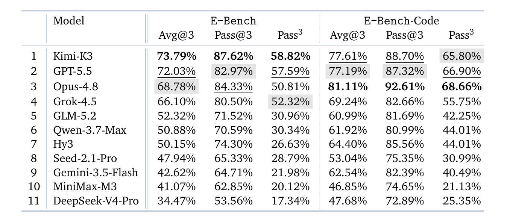
Table 3 | Model performance on E-Bench and E-Bench-Code. Models are ranked by E-Bench Avg@3. The highest three values in each column are highlighted in bold, underline and gray background .表 3 报告所有被评测模型在 E-Bench 上的表现（按 Avg@3 排序），以及在代码执行设置下测得的 E-Bench-Code 结果。图 6 与图 7 比较了两种设置下各模型的分领域 Avg@3 与分领域交互成本（MCP 工具调用次数与智能体动作轮次）。
across the benchmark, ranging from 9.5 in Honor of Kings to 48.5 in Tencent Meeting. Individual tasks induce between 3 and 221 changes. Change patterns are domain-dependent: Honor of Kings tasks mix inserts, updates, and deletes, while QQ Music and Tencent Meeting are dominated by inserts, reflecting bulk operations such as adding favorites, booking meetings, and inviting participants. This diversity in scale and edit type requires agents to track many interdependent state changes rather than perform a single localized action. Moreover, as shown in Table 1, different domains emphasize different task categories, leading to differences in both difficulty and evaluation focus.
从王者荣耀的 9.5 到腾讯会议的 48.5 不等；单个任务引发的变更介于 3 至 221 之间。变更模式因领域而异：王者荣耀的任务混合了插入、更新与删除，QQ 音乐与腾讯会议则以插入为主，对应添加收藏、预订会议、邀请参会者等批量操作。这种规模与编辑类型的多样性要求智能体跟踪许多相互依赖的状态变更，而非执行单个局部动作。此外，如表 1 所示，不同领域侧重的任务类别不同，难度与评测重点也随之有别。
4. Main Results4. 主要结果
4.1. Evaluation Setup4.1. 评测设置
Models. We evaluate 11 frontier LLMs, choosing a representative model from each developer at the time of our experiments: GPT-5.5, Opus-4.8, Grok-4.5, GLM-5.2, Qwen-3.7-Max, Hy3, Seed-2.1-Pro, Gemini-3.5-Flash, MiniMax-M3, Kimi-K3, DeepSeek-V4-Pro and Muse-Spark-1.11. Each model is run as an agent with their highest available thinking effort using a shared harness which exposes each domain’s MCP tools and manages the multi-turn interaction loop.
模型。我们评测 11 个前沿 LLM，在实验时为每个开发者选取一个代表性模型：GPT-5.5、Opus-4.8、Grok-4.5、GLM-5.2、Qwen-3.7-Max、Hy3、Seed-2.1-Pro、Gemini-3.5-Flash、MiniMax-M3、Kimi-K3、DeepSeek-V4-Pro 与 Muse-Spark-1.11。各模型均以智能体形式运行，启用其可用的最高思考强度，共用一个统一 harness——它暴露各领域的 MCP 工具并管理多轮交互循环。
Experiment and metrics. Each task is attempted in three independent trials, with every trial starting from a fresh, isolated copy of the domain database to prevent cross-trial interference. A trial succeeds only if the agent’s final database state exactly matches the ground-truth diff under our deterministic rule-based verifier; otherwise, it receives no partial credit. We report three metrics of increasing strictness. Avg@3 is the per-trial success rate averaged over all tasks and trials, measuring typical performance on average. Pass@3 counts a task as solved if at least one of its three trials succeeds. Pass3 requires all three trials to succeed, measuring reliability; the gap between Pass@3 and Pass3
实验与指标。每个任务进行三次独立尝试，每次都从领域数据库的全新隔离副本开始，以避免跨尝试干扰。只有当智能体的最终数据库状态在确定性规则校验器下与真值差异完全一致时，该次尝试才算成功；否则不给予任何部分得分。我们报告三个严格度递增的指标：Avg@3 为所有任务与尝试的平均单次成功率，衡量平均典型表现；Pass@3 将三次尝试中至少一次成功的任务计为已解决；Pass3 要求三次尝试全部成功，衡量可靠性。Pass@3 与 Pass3 之间的差距
reveals how consistently a model reproduces the correct state change.
反映的是模型复现正确状态变更的一致程度。
Efficiency measures. Beyond accuracy, we record the number of tool calls, number of agent action turns, and input/output tokens average across tasks for evaluating interaction cost and characterizing
效率度量。除准确率外，我们还记录工具调用次数、智能体动作轮次以及跨任务平均的输入/输出 token，用以评估交互成本并刻画
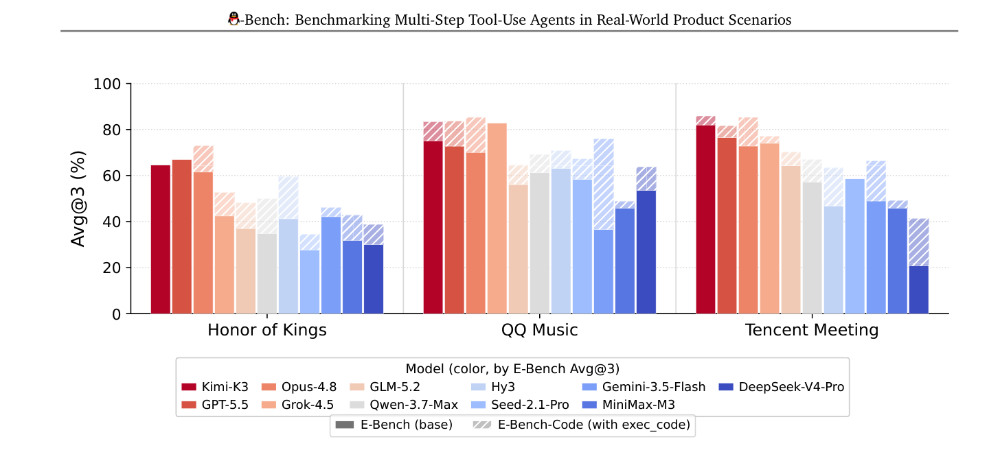
Figure 6 | Per-domain Avg@3 (%) for the 11 evaluated models. Models are ordered by E-Bench Avg@3.
agent efficiency. We evaluate all models under both the base E-Bench, where solvers access only domain-specific MCP tools, and E-Bench-Code, which additionally provides exec_code.
智能体效率。所有模型均在两种设置下评测：基础 E-Bench（求解器只能访问领域专用 MCP 工具）与 E-Bench-Code（额外提供 exec_code）。
4.2. Main Results4.2. 主要结果
Table 3表 3 报告所有被评测模型在 E-Bench 上的表现（按 Avg@3 排序），以及在代码执行设置下测得的 E-Bench-Code 结果。图 6 与图 7 比较了两种设置下各模型的分领域 Avg@3 与分领域交互成本（MCP 工具调用次数与智能体动作轮次）。
| Model | E-Bench | E-Bench-Code | |||||
|---|---|---|---|---|---|---|---|
| Avg@3 | Pass@3 | Pass3 | Avg@3 | Pass@3 | Pass3 | ||
| 1 | Kimi-K3 | 73.79% | 87.62% | 58.82% | 77.61% | 88.70% | 65.80% |
| 2 | GPT-5.5 | 72.03% | 82.97% | 57.59% | 77.19% | 87.32% | 66.90% |
| 3 | Opus-4.8 | 68.78% | 84.33% | 50.81% | 81.11% | 92.61% | 68.66% |
| 4 | Grok-4.5 | 66.10% | 80.50% | 52.32% | 69.24% | 82.66% | 55.75% |
| 5 | GLM-5.2 | 52.32% | 71.52% | 30.96% | 60.99% | 81.69% | 42.25% |
| 6 | Qwen-3.7-Max | 50.88% | 70.59% | 30.34% | 61.92% | 80.99% | 44.01% |
| 7 | Hy3 | 50.15% | 74.30% | 26.63% | 64.40% | 85.56% | 44.01% |
| 8 | Seed-2.1-Pro | 47.94% | 65.33% | 28.79% | 53.04% | 75.35% | 30.99% |
| 9 | Gemini-3.5-Flash | 42.62% | 64.71% | 21.98% | 62.54% | 82.39% | 40.49% |
| 10 | MiniMax-M3 | 41.07% | 62.85% | 20.12% | 46.85% | 74.65% | 21.13% |
| 11 | DeepSeek-V4-Pro | 34.47% | 53.56% | 17.34% | 47.68% | 72.89% | 25.35% |
4.2.1. E-Bench4.2.1. E-Bench
Multi-step tool use remains far from solved. Even the strongest agents leave substantial headroom on E-Bench. Kimi-K3 achieves the highest Avg@3 at 73.79%, followed by GPT-5.5, Opus-4.8, and Grok-4.5, all of which exceed 66%, while no other model exceeds 53%. Also, across all 11 models, Avg@3 averages only 54.56%. This indicates that a typical agent fails on nearly half of the tasks in a single attempt.
多步工具使用远未被解决。即便最强的智能体，在 E-Bench 上也留有可观空间。Kimi-K3 的 Avg@3 最高，为 73.79%；GPT-5.5、Opus-4.8 与 Grok-4.5 紧随其后，均超过 66%；其余模型无一超过 53%。而且，11 个模型的 Avg@3 平均仅为 54.56%。这意味着典型智能体在单次尝试中近一半任务会失败。
Reliability remains the central bottleneck. The gap between Pass@3, Avg@3, and Pass3 shows that many agents succeed only intermittently, with substantially higher Pass@3 compared to Pass3. Even top models are non-robust: Kimi-K3 drops from 87.62% Pass@3 to 58.82% Pass3, and GPT-5.5 drops from 82.97% to 57.59%. For weaker models, reliability nearly collapses. As E-Bench requires exact state changes with no partial credit, such instability is practically significant: agents that solve tasks only occasionally are not yet dependable for modifying live product state.
可靠性仍是核心瓶颈。Pass@3、Avg@3 与 Pass3 的差距表明，许多智能体只能间歇性成功，Pass@3 明显高于 Pass3。顶尖模型同样不够稳健：Kimi-K3 从 87.62% 的 Pass@3 跌至 58.82% 的 Pass3，GPT-5.5 从 82.97% 跌至 57.59%；较弱模型的可靠性则近乎崩塌。E-Bench 要求精确的状态变更且无部分得分，因此这种不稳定有切实的工程含义：只能偶尔解出任务的智能体，尚不足以被信赖去修改在线产品状态。
4.2.2. E-Bench-Code4.2.2. E-Bench-Code
Code execution raises the performance of all models, but reliability remains limited. Granting agents exec_code in E-Bench-Code improves Avg@3 for all evaluated models, whether the model is strong or not. The gains are substantial: Opus-4.8 rises from 68.78% to 81.11%, taking the
代码执行提升了所有模型的性能，但可靠性仍然有限。在 E-Bench-Code 中向智能体开放 exec_code，使所有被评测模型的 Avg@3 都有提升，强弱皆然。提升相当可观：Opus-4.8 从 68.78% 升至 81.11%，一举超越
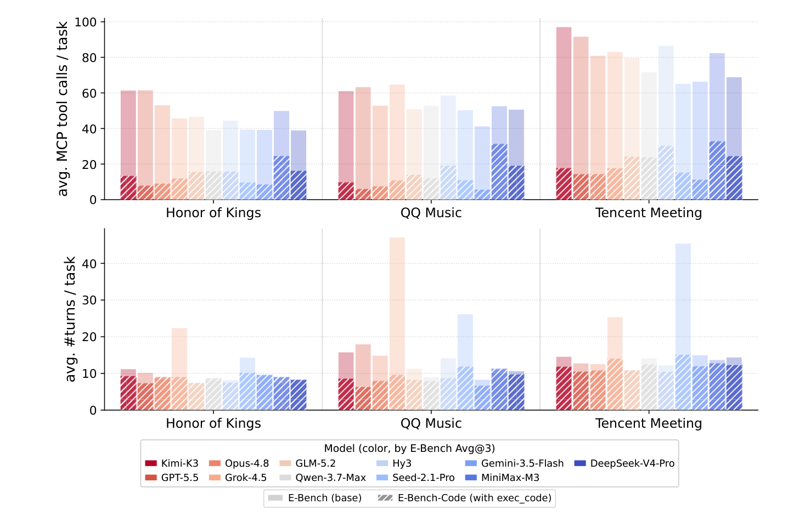
Figure 7 | Per-domain MCP tool calls per task (top row) and number of turns per task (bottom row) for the 11 evaluated models. Models are ordered by E-Bench Avg@3.
top spot over Kimi-K3 and GPT-5.5; Gemini-3.5-Flash climbs from 42.62% to 62.54%—a striking 46.7% relative improvement; weaker models like DeepSeek-V4-Pro also gain a 38.32% relative improvement.However, even with code execution, the best Pass3 (Opus-4.8) remains below 70% and the worst is only 21.13%, leaving substantial room for reliability improvement.
Kimi-K3 与 GPT-5.5 登顶；Gemini-3.5-Flash 从 42.62% 攀升至 62.54%，相对提升高达 46.7%；DeepSeek-V4-Pro 等较弱模型也取得 38.32% 的相对提升。然而，即便有代码执行加持，最好的 Pass3（Opus-4.8）仍低于 70%，最差的仅 21.13%，可靠性仍有很大的改进空间。
Code execution reshuffles the leaderboard benefiting stronger code users. Models whose rankings rise on the leaderboard tend to be those that exploit exec_code effectively: Gemini-3.5-Flash from 9𝑡ℎto 6𝑡ℎ, while Opus-4.8 (a known strong coder) takes the top position instead of the third place it holds in E-Bench. These models route a large fraction of their interaction through code (e.g., 95% for Gemini-3.5-Flash and 93% for Opus-4.8), replacing many individual tool calls with compact programs (i.e., often calling domain-specific functions inside exec_code, rather than direct calling their corresponding MCP tools). We analyze this behavior further in Section 4.5.
代码执行重排了排行榜，受益的是擅长使用代码的模型。名次上升者往往是有效利用 exec_code 的模型：Gemini-3.5-Flash 从第 9𝑡ℎ升到第 6𝑡ℎ；Opus-4.8（公认的编程强手）则摘得头名，而非其在 E-Bench 中保持的第三名。这些模型把很大比例的交互改走代码通道（Gemini-3.5-Flash 为 95%，Opus-4.8 为 93%），以紧凑的程序取代大量单次工具调用——即常在 exec_code 内部调用领域专用函数，而非直接调用对应的 MCP 工具。4.5 节将进一步分析这一行为。
Code execution improves accuracy while cutting cost. The performance gains from exec_code come with markedly lower interaction cost. As shown in Figure 7, enabling exec_code reduces the average number of MCP tool calls per task from 60.42 to 15.86 (a 73.8% drop) and agent turns from 14.87 to 9.87 (a 33.6% drop), averaged over 11 models and three domains. As stated in the previous section, the reduction comes from a single exec_code block folding multi-turn domain-function calls into one top-level action. Together with the Avg@3 gains in Figure 6, this shows that exec_code enables models to solve more tasks while reaching solutions at lower cost. Further analysis of how these improvements are distributed across tasks appears in Section 4.5.
代码执行在提升准确率的同时降低了成本。exec_code 带来的性能提升伴随显著更低的交互成本：如图 7 所示，启用 exec_code 后，平均每任务的 MCP 工具调用次数从 60.42 降至 15.86（下降 73.8%），智能体轮次从 14.87 降至 9.87（下降 33.6%），数值为 11 个模型、三个领域的平均。如上节所述，削减源于单个 exec_code 块把多轮领域函数调用折叠为一个顶层动作。结合图 6 的 Avg@3 提升可见，exec_code 使模型能以更低成本求解更多任务。这些改进在任务间如何分布，4.5 节将作进一步分析。
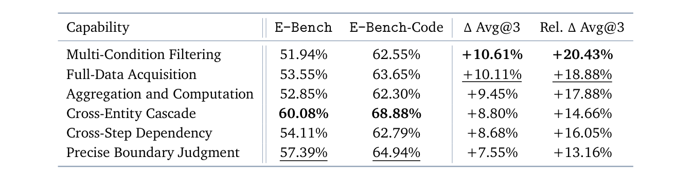
Table 4 | Per-capability Avg@3 averaged over 11 evaluated models under E-Bench and E-Bench- Code, as well as the absolute and relative gain of granting coding capability (“Δ Avg@3” and “Rel. Δ Avg@3”). Rows are sorted by gains (Δ Avg@3). The highest value in each column is highlighted in bold, and the second-highest is underlined.
4.3. How Does Difficulty Vary Across Domains? Per-domain Analysis4.3. 难度如何随领域变化？分领域分析
We further analyze each domain separately. Figure 6 plots per-model Avg@3 across the three domains.
我们进一步对每个领域单独分析。图 6 绘出了各模型在三个领域上的 Avg@3。
Domain difficulty and code-execution gains are both uneven. Figure 6 shows that Honor of Kings is the most challenging domain, while QQ Music is the easiest. Under E-Bench, average Avg@3 is 43.64%, 58.87%, and 61.39% for Honor of Kings, Tencent Meeting, and QQ Music, respectively. With E-Bench-Code, these rise to 52.36%, 67.78%, and 71.94%. QQ Music benefits most from code
领域难度与代码执行收益都不均匀。图 6 显示，王者荣耀最具挑战性，QQ 音乐最容易。E-Bench 下，王者荣耀、腾讯会议与 QQ 音乐的平均 Avg@3 分别为 43.64%、58.87% 与 61.39%；E-Bench-Code 下分别升至 52.36%、67.78% 与 71.94%。QQ 音乐从代码
execution, gaining 10.55 points on average, compared with 8.72 and 8.91 points for Honor of Kings and Tencent Meeting. This matches its capability mix: QQ Music contains more tasks requiring retrieval and aggregation of large amounts of data (e.g. Full-Data Acquisition and Aggregation and Computation tasks), and fewer tasks requiring reasoning for decision making (e.g. Precise Boundary Judgment tasks), which exec_code can accelerate (Section 4.4).
执行中获益最多，平均提升 10.55 分；王者荣耀与腾讯会议分别为 8.72 与 8.91 分。这与 QQ 音乐的能力构成相符：它包含更多需要检索并聚合大量数据的任务（如全量数据获取与聚合计算类），需要推理决策的任务（如精确边界判断类）较少——前者正是 exec_code 能加速的（4.4 节）。
Most model rankings vary across domains. Across domains and settings, Kimi-K3, GPT-5.5, and Opus-4.8 form the frontier tier, with Grok-4.5 as a strong second tier. However, rankings are highly domain-sensitive. For example, Grok-4.5 is the best base-E-Bench model on QQ Music but only mid-pack on Honor of Kings. Below the frontier, models cluster closely and reorder substantially across domains. Rankings also shift by setting, as exec_code disproportionately benefits strong code users. These results show that robust multi-step tool-use evaluation requires coverage across diverse domains rather than focusing on a single domain.
多数模型排名随领域而变。跨领域、跨设置，Kimi-K3、GPT-5.5 与 Opus-4.8 构成第一梯队，Grok-4.5 为强有力的第二梯队。但排名对领域高度敏感：例如 Grok-4.5 是 QQ 音乐上基础 E-Bench 的最佳模型，在王者荣耀上却只居中游。第一梯队之下，各模型得分接近，排名随领域大幅重排；排名也随设置变化，因为 exec_code 对擅长代码的模型增益格外大。这些结果表明，稳健的多步工具使用评测需要覆盖多样领域，而非聚焦单一领域。
4.4. Where Does Code Execution Help? Per-Capability Analysis4.4. 代码执行在哪里起作用？分能力分析
To further identify where exec_code helps, Table 4 decomposes the Avg@3 gain from adding exec_code by capability, averaged over the 11 evaluated models.
为进一步定位 exec_code 的用武之地，表 4 将加入 exec_code 带来的 Avg@3 增益按能力分解，数值为 11 个被评测模型的平均。
Code execution helps computation more than reasoning. As shown in Table 4, the largest gains from exec_code appear in mechanically intensive capabilities: Multi-Condition Filtering, Full-Data Acquisition, and Aggregation and Computation, with highest absolute and relative Avg@3 improve- ments at the same time. These tasks require exhaustive retrieval, exact filtering, aggregation, and intermediate-result tracking, which code can handle reliably through loops and iterations. In contrast, gains are smaller for Cross-Step Dependency and Precise Boundary Judgment, as these capabilities de- pend more on selecting the right entities, dependencies, thresholds, or action order. Thus, exec_code primarily offloads computation rather than reasoning and decision making, explaining both its large average gains and the remaining headroom in E-Bench-Code.
代码执行助计算甚于助推理。如表 4 所示，exec_code 的最大增益出现在机械计算密集的能力上——多条件过滤、全量数据获取与聚合计算，其 Avg@3 的绝对与相对提升同时最高。这些任务需要穷举式检索、精确过滤、聚合与中间结果跟踪，而代码能借助循环与迭代可靠完成。相比之下，跨步依赖与精确边界判断的增益较小，因为它们更依赖选对实体、依赖、阈值或动作顺序。可见，exec_code 外移的主要是计算而非推理与决策——这既解释了其平均增益之大，也解释了 E-Bench-Code 中仍存的提升空间。
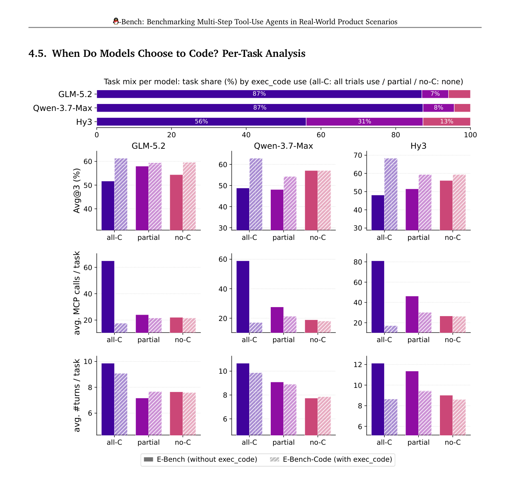
Figure 8 | Comparison of task outcomes under E-Bench-Code, grouped by whether all trials used exec_code (all-C), none used exec_code (no-C), or usage was mixed across trials (partial). Results are first averaged across trials and then across tasks. Results for three models are shown, with paired E-Bench results included as references.
Another interesting observation is that, even when exec_code is available under E-Bench-Code, many models still solve some of the tasks without using it, either consistently or sporadically across trials. Figure 8 groups tasks by exec_code usage across three trials: all trials use it (all-C), no trials use it (no-C), or usage is mixed (partial). For these groups, we compare task-averaged performance (Avg@3), MCP tool calls, and agent action turns, with paired E-Bench results as references. For
另一个有趣的观察是：即便在 E-Bench-Code 下 exec_code 可用，许多模型在部分任务上仍不使用它——或三次尝试始终不用，或时用时不用。图 8 按三次尝试中的 exec_code 使用情况对任务分组：三次全用（all-C）、三次全不用（no-C）与混合使用（partial）。针对这三组，我们比较任务平均表现（Avg@3）、MCP 工具调用次数与智能体动作轮次，并以配对的 E-Bench 结果作参照。为
clarity, we show results for three representative models here and others in the Appendix A.2.
清晰起见，此处展示三个代表性模型的结果，其余模型见附录 A.2。
Code execution rescues hard tasks while reducing interaction cost. Tasks where models consis- tently avoid exec_code (no-C) are relatively easy, often requiring the fewest MCP tool calls and shortest interaction turns. Accordingly, the two settings behave nearly identically on no-C tasks: tool calls and turns remain essentially unchanged, and Avg@3 fluctuates only slightly. In contrast, tasks where models consistently use exec_code (all-C) are the most demanding, and exec_code yields
代码执行既拯救困难任务，又降低交互成本。模型始终不用 exec_code 的任务（no-C）相对容易，往往只需最少的 MCP 工具调用与最短的交互轮次；相应地，两种设置在 no-C 任务上表现几乎一致——工具调用与轮次基本不变，Avg@3 仅轻微波动。相反，模型始终使用 exec_code 的任务（all-C）最为苛刻，exec_code 在其上带来
large performance gains while substantially reducing both MCP calls and agent turns, bringing costs close to those of no-C tasks. Mixed-usage tasks show the same trend: Avg@3 improves from 52.53% to 57.70%, while MCP calls drop from 32.68 to 24.34 on average. Overall, exec_code is used selectively on demanding, tool-heavy tasks, where it batches multi-step, often parallel, domain-specific tool calls into shorter execution traces controlled by more precise code.
大幅性能提升，同时显著减少 MCP 调用与智能体轮次，使成本接近 no-C 任务。混合使用的任务呈现同样趋势：Avg@3 从 52.53% 提升至 57.70%，MCP 调用平均从 32.68 降至 24.34。总体而言，exec_code 被有选择地用于高难度、工具密集的任务——在这些任务上，它把多步且常常并行的领域专用工具调用，打包为更精确代码控制的更短执行轨迹。
This finding further explains the source of the substantial gains in performance and the reductions in interaction cost shown in Figure 6 and Figure 7.
这一发现进一步揭示了图 6 与图 7 中性能大幅提升、交互成本明显下降的来源。
4.6. Does Spending More Help? Performance versus Interaction Cost4.6. 花得越多越有用吗？性能与交互成本
A natural question is whether agents that fail simply need to try harder—issue more tool calls or consume more context. Figure 11 in the Appendix A.3 plots Avg@3 against three per-task cost measures (i.e., task-average number of MCP tool calls, number of turns, and total tokens), with one point per <model, domain>.
一个自然的问题是：失败的智能体是否只需更努力——多发起工具调用或多消耗上下文。附录 A.3 的图 11 绘出了 Avg@3 与三项逐任务成本指标（任务平均 MCP 工具调用数、轮次数与总 token 数）的关系，每个 <model, domain> 对对应一个点。
Harder tasks require more interaction. Under E-Bench, each action is an ordinary domain-tool call, and Avg@3 is moderately positively correlated with the number of tool calls across the 33 <model,domain> pairs (Pearson 𝑟= +0.57). The correlation is even stronger within some domains
更难的任务需要更多交互。E-Bench 下，每个动作都是一次普通的领域工具调用；跨 33 个 <model,domain> 对，Avg@3 与工具调用次数呈中等正相关（Pearson 𝑟= +0.57）。在某些领域内部
(𝑟= +0.86, +0.61, and +0.89 for Honor of Kings, Tencent Meeting, and QQ Music, respectively). This
相关性更强（王者荣耀、腾讯会议与 QQ 音乐分别为 𝑟= +0.86、+0.61 与 +0.89）。这
matches the benchmark’s intended information gap: solvers must gather hidden information through multi-step, often parallel, tool use before committing state-changing actions. In this base setting, a low call count often indicates premature action rather than efficiency. Turns and total token consumption are also weakly positively correlated with success (𝑟= +0.39 and 𝑟= +0.38), consistent with harder tasks requiring more interaction and deliberation.
与基准预设的信息鸿沟相符：求解器必须在提交状态变更动作之前，经由多步且常常并行的工具使用收集隐藏信息。在这一基础设置下，调用次数偏少往往意味着仓促行动，而非高效。轮次与总 token 消耗也与成功呈弱正相关（𝑟= +0.39 与 𝑟= +0.38），印证了更难的任务需要更多交互与斟酌。
In E-Bench-Code, by contrast, Avg@3 is weakly negatively correlated with the number of LLM- emitted tool calls across the same 33 pairs (Pearson 𝑟= −0.36), with a much stronger negative correlation in QQ Music (𝑟= −0.87) and weaker ones in Tencent Meeting and Honor of Kings (𝑟= −0.57 and 𝑟= −0.36). Because models can capability many domain-specific function calls into a single exec_code block, fewer emitted tool calls do not imply less work. Rather, the result suggests that with code execution, it is possible to lower costs while preserving or improving performance (Avg@3). Additional analysis is provided in Appendix A.3.
相比之下，在 E-Bench-Code 中，同样的 33 个对上，Avg@3 与 LLM 发出的工具调用次数呈弱负相关（Pearson 𝑟= −0.36）：QQ 音乐负相关强得多（𝑟= −0.87），腾讯会议与王者荣耀较弱（𝑟= −0.57 与 𝑟= −0.36）。由于模型可将众多领域专用函数调用打包进单个 exec_code 块，发出的工具调用更少并不意味着工作量更小。这一结果反而说明：有了代码执行，可以在保持乃至提升性能（Avg@3）的同时降低成本。更多分析见附录 A.3。
More detailed analyses of efficiency and API cost (Figure 1) are provided in Appendix A.
效率与 API 成本（图 1）的更详细分析见附录 A。
5. Conclusion and Future Work5. 结论与未来工作
In this work, we introduce E-Bench, and its code-enabled extension E-Bench-Code, a fully synthetic benchmark for evaluating LLM agents on multi-step tool use. E-Bench separates environment synthesis from task synthesis: graph-guided database filling builds reusable, orphan-free environments, while generator-solver asymmetry creates state-changing tasks with information and tool gaps. Agents must discover hidden data and compose multiple, often parallel, tool calls before changing state. Since both environments and tasks are synthetic, E-Bench is controllable, scalable, and deterministically graded via database-state diffs.
本工作提出了 E-Bench 及其开放代码执行的扩展 E-Bench-Code——一个用于评测 LLM 智能体多步工具使用的全合成基准。E-Bench 将环境合成与任务合成分离：图引导的数据库填充构建可复用、无孤儿记录的环境；生成器-求解器不对称制造出带信息鸿沟与工具鸿沟的状态变更任务。智能体必须在变更状态前发现隐藏数据，并组合多个、常常并行的工具调用。环境与任务均为合成，因此 E-Bench 可控、可扩展，并可依据数据库状态差异进行确定性判分。
Benchmarking 11 frontier LLMs shows that multi-step tool use remains unsolved. The best model reaches only 73.79% Avg@3, and Pass3 remains below 60% on E-Bench. exec_code within E-Bench-Code improves every model, but even the best Pass3 stays below 70%. The gains come from
对 11 个前沿 LLM 的基准评测表明，多步工具使用仍未被解决：最好的模型仅达到 73.79% 的 Avg@3，E-Bench 上 Pass3 低于 60%。E-Bench-Code 中的 exec_code 让每个模型都有起色，但最好的 Pass3 仍低于 70%。增益来自
folding work into code: strong agents batch tool calls for computation-heavy data acquisition, aggre- gation, and filtering, while reasoning-heavy cross-entity cascades and boundary-sensitive decisions remain difficult.
把工作折叠进代码：强智能体会为计算密集的数据获取、聚合与过滤批量打包工具调用，而推理密集的跨实体级联与边界敏感决策依旧困难。
Future work will extend E-Bench toward real domain CLIs and live product back-ends, and from single-domain tasks to cross-domain scenarios that better reflect real product workflows. We also view E-Bench as a controllable, scalable source of training data for improving agents’ multi-step tool-use ability and reliability.
未来工作将把 E-Bench 扩展到真实的领域 CLI 与在线产品后端，并从单领域任务拓展到更能反映真实产品工作流的跨领域场景。我们同样将 E-Bench 视为可控、可扩展的训练数据来源，用以提升智能体的多步工具使用能力与可靠性。
References参考文献
Anthropic. The claude 3 model family: A new standard for intelligence, 2024. URL https://www.
[REF] 原样保留英文文献列表
anthropic.com/news/claude-3-family.[REF] 原样保留英文文献列表
Chaithanya Bandi, Ben Hertzberg, Geobio Boo, Tejas Polakam, Jeff Da, Sami Hassaan, Manasi Sharma,
[REF] 原样保留英文文献列表
Andrew Park, Ernesto Hernandez, Dan Rambado, Ivan Salazar, Rafael Cruz, Chetan Rane, Ben Levin, Brad Kenstler, and Bing Liu. MCP-atlas: A large-scale benchmark for tool-use competency with real MCP servers. arXiv preprint arXiv:2602.00933, 2026.
[REF] 原样保留英文文献列表
Wei He, Yueqing Sun, Hongyan Hao, Xueyuan Hao, Zhikang Xia, Qi Gu, Chengcheng Han, Dengchang
[REF] 原样保留英文文献列表
Zhao, Hui Su, Kefeng Zhang, Man Gao, Xi Su, Xiaodong Cai, Xunliang Cai, Yu Yang, and Yunke Zhao. VitaBench: Benchmarking LLM agents with versatile interactive tasks in real-world applications. arXiv preprint arXiv:2509.26490, 2025.
[REF] 原样保留英文文献列表
Dan Hendrycks, Collin Burns, Steven Basart, Andy Zou, Mantas Mazeika, Dawn Song, and Jacob
[REF] 原样保留英文文献列表
Steinhardt. Measuring massive multitask language understanding. In International Conference on Learning Representations, 2021. URL https://openreview.net/forum?id=d7KBjmI3GmQ.
[REF] 原样保留英文文献列表
Carlos E Jimenez, John Yang, Alexander Wettig, Shunyu Yao, Kexin Pei, Ofir Press, and Karthik R
[REF] 原样保留英文文献列表
Narasimhan. SWE-bench: Can language models resolve real-world github issues? In The Twelfth International Conference on Learning Representations, 2024. URL https://openreview.net/ forum?id=VTF8yNQM66.
[REF] 原样保留英文文献列表
Xiao Liu, Hao Yu, Hanchen Zhang, Yifan Xu, Xuanyu Lei, Hanyu Lai, Yu Gu, Hangliang Ding, Kaiwen
[REF] 原样保留英文文献列表
Men, Kejuan Yang, et al. Agentbench: Evaluating llms as agents. In International Conference on Learning Representations, 2024.
[REF] 原样保留英文文献列表
Zhiwei Liu, Jielin Qiu, Shiyu Wang, Jianguo Zhang, Zuxin Liu, Roshan Ram, Haolin Chen, Weiran
[REF] 原样保留英文文献列表
Yao, Shelby Heinecke, Silvio Savarese, Huan Wang, and Caiming Xiong. MCPEval: Automatic MCP-based deep evaluation for AI agent models. In Proceedings of the 2025 Conference on Empirical Methods in Natural Language Processing: System Demonstrations, pages 373–402, Suzhou, China, 2025. Association for Computational Linguistics. doi: 10.18653/v1/2025.emnlp-demos.27. URL https://aclanthology.org/2025.emnlp-demos.27/.
[REF] 原样保留英文文献列表
Jiarui Lu, Thomas Holleis, Yizhe Zhang, Bernhard Aumayer, Feng Nan, Haoping Bai, Shuang Ma, Shen
[REF] 原样保留英文文献列表
Ma, Mengyu Li, Guoli Yin, Zirui Wang, and Ruoming Pang. ToolSandbox: A stateful, conversational, interactive evaluation benchmark for LLM tool use capabilities. In Findings of the Association for Computational Linguistics: NAACL 2025, pages 1160–1183. Association for Computational Linguistics, 2025. doi: 10.18653/v1/2025.findings-naacl.65. URL https://aclanthology. org/2025.findings-naacl.65/.
[REF] 原样保留英文文献列表
Ziyang Luo, Zhiqi Shen, Wenzhuo Yang, Zirui Zhao, Prathyusha Jwalapuram, Amrita Saha, Doyen
[REF] 原样保留英文文献列表
Sahoo, Silvio Savarese, Caiming Xiong, and Junnan Li. MCP-Universe: Benchmarking large language models with real-world Model Context Protocol servers. arXiv preprint arXiv:2508.14704, 2025.
[REF] 原样保留英文文献列表
Grégoire Mialon, Clémentine Fourrier, Thomas Wolf, Yann LeCun, and Thomas Scialom. Gaia: a bench-
[REF] 原样保留英文文献列表
mark for general ai assistants. In The Twelfth International Conference on Learning Representations, 2023.
[REF] 原样保留英文文献列表
Guozhao Mo, Wenliang Zhong, Jiawei Chen, Qianhao Yuan, Xuanang Chen, Yaojie Lu, Hongyu Lin,
[REF] 原样保留英文文献列表
Ben He, Xianpei Han, and Le Sun. LiveMCPBench: Can agents navigate an ocean of MCP tools? arXiv preprint arXiv:2508.01780, 2025.
[REF] 原样保留英文文献列表
Shishir G Patil, Tianjun Zhang, Xin Wang, and Joseph E Gonzalez. Gorilla: Large language model
[REF] 原样保留英文文献列表
connected with massive apis. Advances in Neural Information Processing Systems, 37:126544–126565, 2024.
[REF] 原样保留英文文献列表
Shishir G Patil, Huanzhi Mao, Fanjia Yan, Charlie Cheng-Jie Ji, Vishnu Suresh, Ion Stoica, and Joseph E.
[REF] 原样保留英文文献列表
Gonzalez. The berkeley function calling leaderboard (BFCL): From tool use to agentic evaluation of large language models. In Forty-second International Conference on Machine Learning, 2025. URL https://openreview.net/forum?id=2GmDdhBdDk.
[REF] 原样保留英文文献列表
Yujia Qin, Shihao Liang, Yining Ye, Kunlun Zhu, Lan Yan, Yaxi Lu, Yankai Lin, Xin Cong, Xiangru
[REF] 原样保留英文文献列表
Tang, Bill Qian, Sihan Zhao, Lauren Hong, Runchu Tian, Ruobing Xie, Jie Zhou, Mark Gerstein, dahai li, Zhiyuan Liu, and Maosong Sun. ToolLLM: Facilitating large language models to master 16000+ real-world APIs. In The Twelfth International Conference on Learning Representations, 2024. URL https://openreview.net/forum?id=dHng2O0Jjr.
[REF] 原样保留英文文献列表
David Rein, Betty Li Hou, Asa Cooper Stickland, Jackson Petty, Richard Yuanzhe Pang, Julien Dirani,
[REF] 原样保留英文文献列表
Julian Michael, and Samuel R. Bowman. GPQA: A graduate-level google-proof q&a benchmark. In First Conference on Language Modeling, 2024. URL https://openreview.net/forum?id= Ti67584b98.
[REF] 原样保留英文文献列表
Aaditya Singh, Adam Fry, Adam Perelman, Adam Tart, Adi Ganesh, Ahmed El-Kishky, Aidan McLaugh-
[REF] 原样保留英文文献列表
lin, Aiden Low, AJ Ostrow, Akhila Ananthram, et al. Openai gpt-5 system card. arXiv preprint arXiv:2601.03267, 2025.
[REF] 原样保留英文文献列表
Harsh Trivedi, Tushar Khot, Mareike Hartmann, Ruskin Manku, Vinty Dong, Edward Li, Shashank
[REF] 原样保留英文文献列表
Gupta, Ashish Sabharwal, and Niranjan Balasubramanian. Appworld: A controllable world of apps and people for benchmarking interactive coding agents. In Proceedings of the 62nd Annual Meeting of the Association for Computational Linguistics (Volume 1: Long Papers), pages 16022–16076, 2024.
[REF] 原样保留英文文献列表
Zhenting Wang, Qi Chang, Hemani Patel, Shashank Biju, Cheng-En Wu, Quan Liu, Aolin Ding, Alireza
[REF] 原样保留英文文献列表
Rezazadeh, Ankit Shah, Yujia Bao, and Eugene Siow. MCP-bench: Benchmarking tool-using LLM agents with complex real-world tasks via MCP servers. In International Conference on Learning Representations, 2026. URL https://openreview.net/forum?id=fe8mzHwMxN.
[REF] 原样保留英文文献列表
Zijian Wu, Xiangyan Liu, Xinyuan Zhang, Lingjun Chen, Fanqing Meng, Lingxiao Du, Yiran Zhao,
[REF] 原样保留英文文献列表
Fanshi Zhang, Yaoqi Ye, Jiawei Wang, Zirui Wang, Jinjie Ni, Yufan Yang, Arvin Xu, and Michael Qizhe Shieh. MCPMark: A benchmark for stress-testing realistic and comprehensive MCP use. In International Conference on Learning Representations, 2026. URL https://openreview.net/ forum?id=uobROwBsJm.
[REF] 原样保留英文文献列表
Frank F Xu, Yufan Song, Boxuan Li, Yuxuan Tang, Kritanjali Jain, Mengxue Bao, Zora Z Wang,
[REF] 原样保留英文文献列表
Xuhui Zhou, Zhitong Guo, Murong Cao, et al. Theagentcompany: benchmarking llm agents on consequential real world tasks. arXiv preprint arXiv:2412.14161, 2024.
[REF] 原样保留英文文献列表
Zhilin Yang, Peng Qi, Saizheng Zhang, Yoshua Bengio, William W Cohen, Ruslan Salakhutdinov, and
[REF] 原样保留英文文献列表
Christopher D Manning. Hotpotqa: A dataset for diverse, explainable multi-hop question answering. In Proceedings of the 2018 Conference on Empirical Methods in Natural Language Processing, pages 2369–2380, 2018.
[REF] 原样保留英文文献列表
Shunyu Yao, Jeffrey Zhao, Dian Yu, Nan Du, Izhak Shafran, Karthik R Narasimhan, and Yuan Cao.
[REF] 原样保留英文文献列表
React: Synergizing reasoning and acting in language models. In The eleventh international conference on learning representations, 2022.
[REF] 原样保留英文文献列表
Shunyu Yao, Noah Shinn, Pedram Razavi, and Karthik Narasimhan. 𝜏-bench: A benchmark for
[REF] 原样保留英文文献列表
tool-agent-user interaction in real-world domains, 2024. arXiv preprint arXiv:2406.12045, 2024.
[REF] 原样保留英文文献列表
Shuyan Zhou, Frank F. Xu, Hao Zhu, Xuhui Zhou, Robert Lo, Abishek Sridhar, Xianyi Cheng, Tianyue
[REF] 原样保留英文文献列表
Ou, Yonatan Bisk, Daniel Fried, Uri Alon, and Graham Neubig. Webarena: A realistic web en- vironment for building autonomous agents. In The Twelfth International Conference on Learning Representations, 2024. URL https://openreview.net/forum?id=oKn9c6ytLx.
[REF] 原样保留英文文献列表
Appendix附录
A. More Benchmark Results AnalysisA. 更多基准结果分析
A.1. Parallel Tool Calling and Token ConsumptionA.1. 并行工具调用与 Token 消耗
Parallel tool calling is an important capability for agents operating in stateful environments, and it varies substantially across models. Many tasks in E-Bench require agents to explore multiple independent parts of the environment, such as retrieving details for several songs or checking the daily schedules of different users. In these cases, issuing independent tool calls in parallel can substantially improve efficiency by shortening interaction trajectories and reducing repeated context accumulation, thereby lowering token consumption.
并行工具调用是有状态环境中智能体的一项重要能力，且在各模型之间差异显著。E-Bench 中的许多任务要求智能体探索环境中多个相互独立的部分，例如同时检索多首歌曲的详情，或核对不同用户的每日日程。在这些情形下，并行发出相互独立的工具调用可显著提升效率：缩短交互轨迹、减少重复的上下文累积，从而降低 token 消耗。
We further analyze whether evaluated models can issue multiple tool calls within the same interaction
我们进一步分析被评测模型能否在同一个交互
round. For each model, we compute the average number of tool calls per turn as a proxy for parallel tool-calling capability, and compare it with the average token consumption per task. Our token- consumption statistic sums the input tokens sent to the model and the output tokens generated by the model across all model invocations in a trajectory.
轮次内发出多个工具调用。对每个模型，我们以每轮平均工具调用数作为并行工具调用能力的代理指标，并与每任务平均 token 消耗作比较。token 消耗统计的口径是：把轨迹中所有模型调用里发送给模型的输入 token 与模型生成的输出 token 逐一求和。
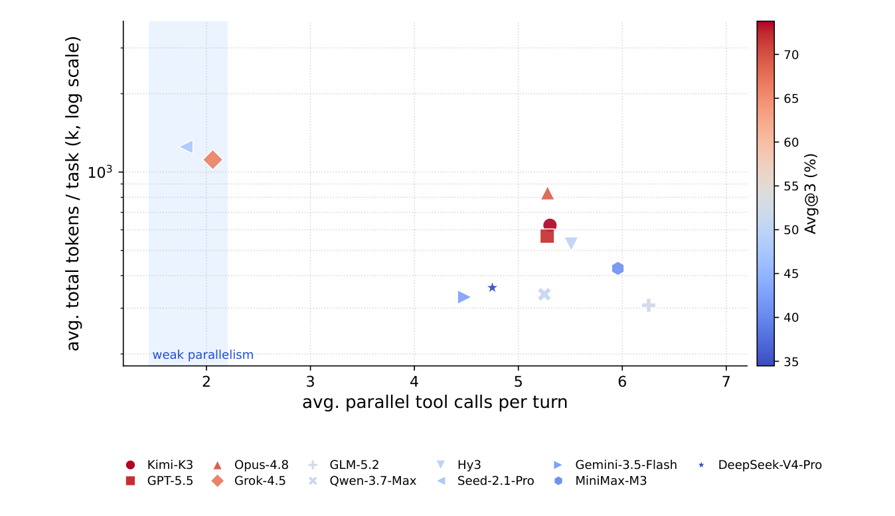
Figure 9 | Relationship between global parallel tool-calling capability and token consumption. Each point denotes one evaluated model; marker shape identifies the model, and color indicates Avg@3. The x-axis measures the average number of tool calls issued per turn, and the y-axis shows the average total tokens consumed per task.
As shown in Figure 9, models that issue more MCP tool calls in each turn, for example GLM-5.2, usually finish the task with fewer interaction rounds, thereby avoiding repeatedly re-reading long observations and accumulating excessive context tokens. In contrast, Grok-4.5 and Seed-2.1-Pro exhibit notably weak parallelism. Grok-4.5 issues only 2.06 tool calls per turn on average and consumes 1.12M tokens per task, while Seed-2.1-Pro issues only 1.80 tool calls per turn and consumes 1.25M tokens per task. These two models consume 1.18M tokens per task on average, substantially higher than the 0.44M
如图 9 所示，每轮发出更多 MCP 工具调用的模型（如 GLM-5.2）通常能以更少的交互轮次完成任务，避免反复重读冗长的观察结果、累积过多上下文 token。相比之下，Grok-4.5 与 Seed-2.1-Pro 的并行性明显偏弱：Grok-4.5 平均每轮仅发出 2.06 次工具调用，每任务消耗 1.12M token；Seed-2.1-Pro 平均每轮仅 1.80 次工具调用，每任务消耗 1.25M token。这两个模型平均每任务消耗 1.18M token，远高于 0.44M
average of models with at least four tool calls per turn. This suggests that insufficient parallel tool invocation is an important source of token inefficiency in multi-step tool-use agents: weaker parallel tool-calling capability directly increases token usage and therefore leads to higher monetary cost under real API pricing.
每轮工具调用不少于四次的模型的平均值。这表明，并行的工具调用不足是多步工具使用智能体 token 低效的一个重要来源：较弱的并行工具调用能力直接推高 token 用量，进而在真实 API 定价下带来更高的金钱成本。
A.2. Per-Model Effect of Code ExecutionA.2. 代码执行对各模型的影响
Section 4.5 analyzed how exec_code affects performance and interaction cost for the three models with a paired E-Bench run shown in the main text (GLM-5.2, Qwen-3.7-Max, Hy3). Here we report the same metrics on different kinds of task for the remaining eight models, in Figure 10.
4.5 节分析了 exec_code 对正文中给出配对 E-Bench 运行的三个模型（GLM-5.2、Qwen-3.7-Max、Hy3）在性能与交互成本上的影响。此处我们在图 10 中报告其余八个模型在各类任务上的相同指标。
The pattern in Figure 10 mirrors that of Figure 8 in the main text.
图 10 的模式与正文图 8 一致。
First, tasks for which a model always uses code (all-C) are the most tool-intensive. Under E-Bench, where exec_code is unavailable, models must issue many individual domain-specific MCP calls to solve these tasks, leading to substantially higher call counts compared to the other two types of tasks. Granting exec_code sharply reduces the number of MCP calls; Avg@3 often improves as well, and the number of turns often decreases. This confirms that a single code block can replace a long sequence of individual tool calls without sacrificing accuracy.
首先，模型始终使用代码的任务（all-C）工具最密集。在无 exec_code 的 E-Bench 下，模型必须发出大量单次领域专用 MCP 调用才能解决这些任务，调用次数明显高于另外两类任务；授予 exec_code 后，MCP 调用次数骤减，Avg@3 往往随之提升，轮次往往减少。这证实单个代码块可以取代一长串单次工具调用，而不牺牲准确率。
A caveat is that some models rely on exec_code so heavily that their partial and no-C groups contain very few tasks: Gemini-3.5-Flash has no tasks outside all-C; GPT-5.5 has no no-C tasks; Opus-4.8 assigns 99% of tasks to all-C; Grok-4.5 assigns 95% of tasks to all-C with only two no-C tasks out of 323 tasks in total; and Kimi-K3 likewise assigns 94% of tasks to all-C with only six no-C tasks. Thus, their no-C and partial bars should be interpreted as indicative rather than statistically robust. The trends are clearest for models with sizeable groups in all three categories (Seed-2.1-Pro, MiniMax-M3, and DeepSeek-V4-Pro): for these models, no-C tasks show nearly identical cost and performance across the two settings, as expected when code is not used.
需要说明的是，部分模型对 exec_code 依赖过重，以致其 partial 与 no-C 组只含极少数任务：Gemini-3.5-Flash 在 all-C 之外没有任何任务；GPT-5.5 没有 no-C 任务；Opus-4.8 把 99% 的任务归入 all-C；Grok-4.5 把 95% 的任务归入 all-C，323 个任务中仅有两个 no-C 任务；Kimi-K3 同样把 94% 的任务归入 all-C，仅有六个 no-C 任务。因此，它们的 no-C 与 partial 柱条只宜作指示性解读，而非统计稳健的结论。趋势在三组任务数量都具规模（Seed-2.1-Pro、MiniMax-M3 与 DeepSeek-V4-Pro）的模型上最为清晰：对这些模型，no-C 任务在两种设置下的成本与表现几乎相同，与不用代码时的预期一致。
A.3. Does Spending More Help in E-Bench-Code?A.3. 在 E-Bench-Code 中花得越多越有用吗？
As discussed in Section A.3, under E-Bench, higher interaction cost is associated with better perfor- mance (Avg@3) on harder tasks: stronger runs tend to use more MCP tool calls, more agent turns, and more tokens (see also the top row of Figure 11).
如 A.3 节所述，E-Bench 下更高的交互成本伴随着更难任务上更好的表现（Avg@3）：更强的运行往往使用更多 MCP 工具调用、更多智能体轮次与更多 token（另见图 11 上排）。
Under E-Bench-Code, however, this trend sometimes seems to reverse. With exec_code available, models can fold multiple domain-specific function calls into a single MCP call within one turn. Still, the correlations between Avg@3 and cost are weak: Avg@3 is only weakly negatively correlated with MCP tool calls (𝑟= −0.36) and is nearly uncorrelated with turns and total tokens (𝑟= −0.07 and 𝑟= −0.25, respectively). Thus, we cannot conclude that packing more domain-specific calls into exec_code is the only path to success, although it may increase the likelihood of solving demanding tasks efficiently.
而在 E-Bench-Code 下，这一趋势有时看似反转：有了 exec_code，模型可以在一轮内把多个领域专用函数调用折叠为单个 MCP 调用。不过，Avg@3 与成本之间的相关性仍然很弱——Avg@3 与 MCP 工具调用仅呈弱负相关（𝑟= −0.36），与轮次及总 token 几乎不相关（𝑟= −0.07 与 𝑟= −0.25）。因此，我们不能断言把更多领域专用调用打包进 exec_code 是唯一的成功路径，尽管它可能提高高效攻克高难任务的几率。
A.4. API Cost-Efficiency AnalysisA.4. API 成本效率分析
Real deployments care not only about accuracy but also about the monetary cost of reaching it. We therefore report the task averaged API cost alongside Avg@3, under both E-Bench and E-Bench-Code in Figure 1 and Table 5. The task averaged API cost is calculated following: Real-world deployments must balance accuracy against the monetary cost required to achieve it. We therefore report task- averaged API cost alongside Avg@3 for both E-Bench and E-Bench-Code, as shown in Figure 1 and
真实部署不仅关心准确率，也关心达到该准确率的金钱成本。因此我们在图 1 与表 5 中同时报告 E-Bench 与 E-Bench-Code 下逐任务平均的 API 成本与 Avg@3。逐任务平均 API 成本的计算方式如下：真实部署必须在准确率与达成准确率所需的金钱成本之间取得平衡。为此，我们在图 1 与
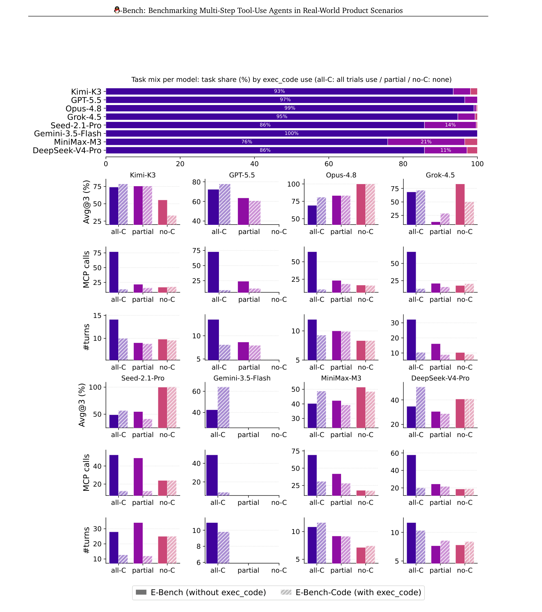
Figure 10 | Effect of exec_code for the eight models not shown in Figure 8. Bars are absent where a model has no tasks in a group (e.g. Gemini-3.5-Flash used exec_code on every task, so it has only the all-C group).
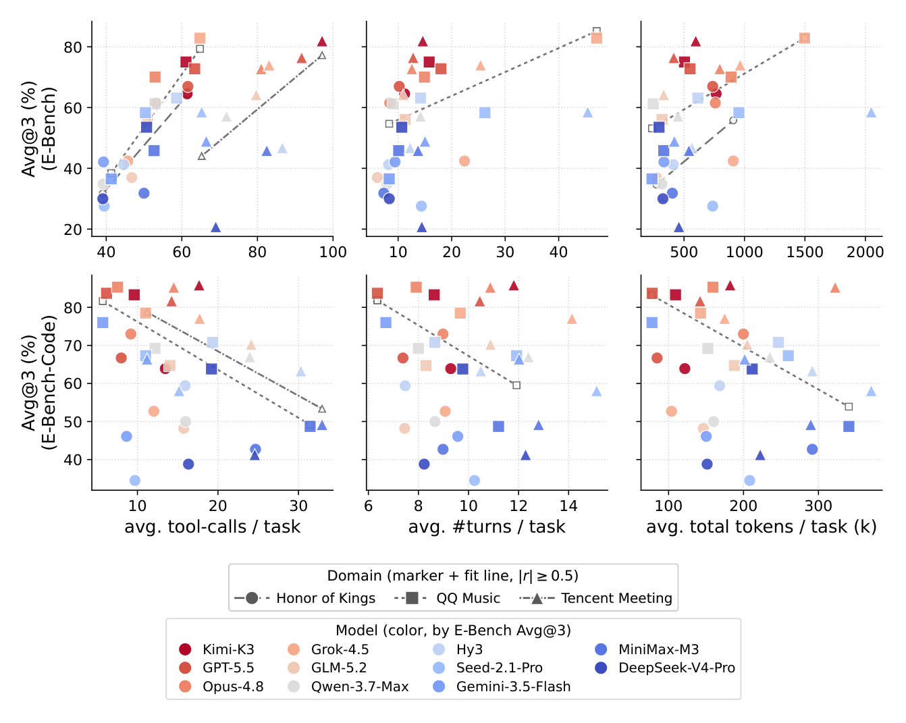
Figure 11 | Avg@3 (%) versus per-task interaction cost (task-average MCP tool calls, number of turns, and total tokens) for all evaluated models in three domains under E-Bench (top row) and E-Bench-Code (bottom row). Gray least-squares lines, matching the domain markers in the legend are drawn in any panel where the within-domain Pearson correlation satisfies |𝑟| ≥0.5.
Table 5表 5。逐任务平均 API 成本按下式计算：
| million | tokens. Prices | for Hy3, | Seed-2.1-Pro, | and | DeepSeek-V4-Pro | are shown | to four decimals | |
|---|---|---|---|---|---|---|---|---|
| because | these models | are priced | in RMB and | converted | to | USD manually | at the | current exchange |
| rate | (1:6.77); the | remaining models | are priced | natively | in | USD and | shown to two | decimals. Rows |
| follow | the canonical | E-Bench Avg@3 | order. | |||||
| Price ($/M) | E-Bench | E-Bench-Code | ||||||
| Model | 𝑝in | 𝑝cache | 𝑝out | Avg@3 | Cost ($) | Avg@3 | Cost ($) | |
| Kimi-K3 | 3.00 | 0.30 | 15.00 | 73.8% | 0.634 | 77.6% | 0.191 | |
| GPT-5.5 | 5.00 | 0.50 | 30.00 | 72.0% | 1.786 | 77.2% | 0.481 | |
| Opus-4.8 | 6.25 | 0.50 | 25.00 | 68.8% | 3.398 | 81.1% | 0.833 | |
| Grok-4.5 | 2.00 | 0.30 | 6.00 | 66.1% | 0.504 | 69.2% | 0.137 | |
| GLM-5.2 | 1.40 | 0.26 | 4.40 | 52.3% | 0.258 | 61.0% | 0.145 | |
| Qwen-3.7-Max | 1.25 | 0.25 | 3.75 | 50.9% | 0.243 | 61.9% | 0.138 | |
| Hy3 | 0.1477 | 0.0369 | 0.5908 | 50.2% | 0.053 | 64.4% | 0.029 | |
| Seed-2.1-Pro | 0.8863 | 0.1773 | 4.4313 | 47.9% | 0.452 | 53.0% | 0.138 | |
| Gemini-3.5-Flash | 1.50 | 0.15 | 9.00 | 42.6% | 0.452 | 59.1% | 0.189 | |
| MiniMax-M3 | 0.30 | 0.06 | 1.20 | 41.1% | 0.063 | 46.9% | 0.041 | |
| DeepSeek-V4-Pro | 0.4350 | 0.0036 | 0.8700 | 34.5% | 0.028 | 47.7% | 0.024 |
cost = 𝑛in · 𝑝in + 𝑛cache · 𝑝cache + 𝑛out · 𝑝outcost = 𝑛in · 𝑝in + 𝑛cache · 𝑝cache + 𝑛out · 𝑝out
106 , (1)106 , (1)
where 𝑛in, 𝑛cache, and 𝑛out are the task-average fresh-input (also, cache-activate-input), cached-input, and output tokens taken from our result files, and 𝑝in, 𝑝cache, 𝑝out are the corresponding prices in USD per million tokens (listed per model in Table 5). where 𝑛in, 𝑛cache, and 𝑛out denote the number of task-averaged fresh-input (also, cache-activation input), cached-input, and output tokens, respectively; and 𝑝in, 𝑝cache, 𝑝out denote the corresponding prices in USD ($) per million tokens for each model, as listed in Table 5.
其中，𝑛in、𝑛cache 与 𝑛out 是取自结果文件的任务平均新增输入（亦即缓存激活输入）、缓存输入与输出 token 数；𝑝in、𝑝cache 与 𝑝out 是对应的每百万 token 美元单价（各模型价格列于表 5）。等价地，𝑛in、𝑛cache 与 𝑛out 分别表示任务平均的新增输入（亦即缓存激活输入）、缓存输入与输出 token 的数量；𝑝in、𝑝cache 与 𝑝out 分别表示各模型每百万 token 的美元价格（$），如表 5 所列。
As shown in Table 5 and Figure 1, API cost varies by more than an order of magnitude across models with comparable accuracy. Moreover, exec_code shifts the overall frontier toward the cost-efficient upper-left region: by consolidating many domain-tool calls into compact programs, it substantially reduces per-task token usage and hence cost, while also improving Avg@3.
如表 5 与图 1 所示，在准确率相近的模型之间，API 成本相差超过一个数量级。此外，exec_code 把整体前沿推向左上方的成本高效区域：通过将大量领域工具调用合并为紧凑的程序，它大幅降低每任务 token 用量与成本，同时还提升了 Avg@3。
Under both settings, DeepSeek-V4-Pro, Hy3, Grok-4.5, and Kimi-K3 lie on the Pareto frontier of cost
在两种设置下，DeepSeek-V4-Pro、Hy3、Grok-4.5 与 Kimi-K3 都位于成本
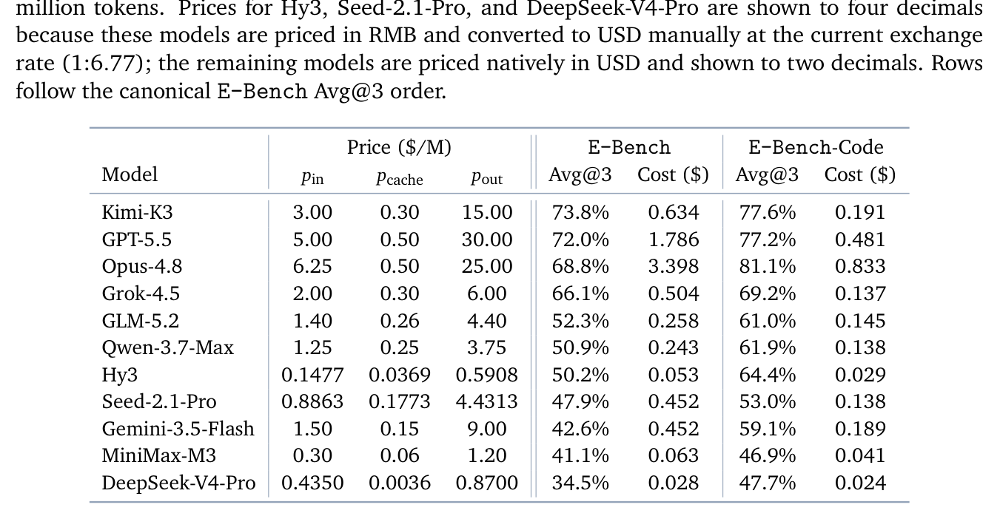
Table 5 | Per-task cost efficiency of the 11 evaluated models under E-Bench and E-Bench-Code. “𝑝in”, “𝑝cache”, and “𝑝out” are the fresh-input, cache-hit-input, and output token prices in USD per表 5。逐任务平均 API 成本按下式计算：
efficiency, achieving relatively high Avg@3 at a given API cost. From this perspective, these models offer the strongest cost-performance trade-offs among the evaluated models.
效率的 Pareto 前沿之上，在给定 API 成本下取得相对较高的 Avg@3。从这一角度看，它们在被评测模型中提供了最强的成本-性能权衡。
A.5. Partial Results with Muse-Spark-1.1A.5. Muse-Spark-1.1 的部分结果
We also tested Muse-Spark-1.1 on E-Bench and E-Bench-Code. However, due to its strict content-
我们还在 E-Bench 与 E-Bench-Code 上测试了 Muse-Spark-1.1。然而，由于其严格的内容
moderation mechanism, some tasks failed to be tested. For example, in Honor of Kings, a task with narration like “delete all that kind of friends, do not leave any of them” consistently triggers a content- policy-violation and cannot be evaluated. Only 265 of the 323 tasks completed successfully across all three trials of both settings (268 considering E-Bench alone, 287 considering E-Bench-Code alone). We therefore compare Muse-Spark-1.1 against all other models on these 265 succeeded tasks, re-evaluating every model on the same subset. Results are reported in Table 6.
审核机制，部分任务无法完成测试。例如在王者荣耀中，一个包含「把那类好友全部删掉，一个不留」之类叙述的任务会持续触发内容政策违规，因而无法评测。323 个任务中仅有 265 个在两种设置的全部三次尝试中成功完成（仅计 E-Bench 为 268 个，仅计 E-Bench-Code 为 287 个）。因此，我们在这 265 个成功任务上把 Muse-Spark-1.1 与所有其他模型比较，并在同一子集上重新评测每个模型，结果报告于表 6。
As shown in Table 6, Muse-Spark-1.1 is a competitive mid-frontier model that benefits clearly from code execution. On E-Bench, it achieves 61.6% Avg@3, ranking 5th among the 12 models and clearly outperforming the rest of the field, none of which exceeds 53%. With exec_code, its Avg@3 rises to 69.9%, moving it to 4th. As with other models, reliability remains a challenge: Pass3 is substantially lower than Pass@3. Notably, when exec_code is available, Muse-Spark-1.1 shifts from being the most tool-intensive model—issuing 71.59 MCP calls per task, the highest among all 12 models, with heavy token consumption—to one of the most efficient, achieving the second-lowest number of MCP calls and agent turns per task.
如表 6 所示，Muse-Spark-1.1 是一个有竞争力的中前沿模型，且明显受益于代码执行。E-Bench 上它取得 61.6% 的 Avg@3，在 12 个模型中排第 5，明显领先于其余模型——无一超过 53%。启用 exec_code 后，其 Avg@3 升至 69.9%，排名升至第 4。与其他模型一样，可靠性仍是挑战：Pass3 明显低于 Pass@3。值得注意的是，当 exec_code 可用时，Muse-Spark-1.1 从工具最密集的模型——每任务发出 71.59 次 MCP 调用，居全部 12 个模型之首，且 token 消耗巨大——一跃成为最高效的模型之一：每任务的 MCP 调用数与智能体轮次均列第二低。
Muse-Spark-1.1 is also a strong parallel tool call user. Under E-Bench, Muse-Spark-1.1 issues about 4.6 tool calls per turn (71.59 calls over 15.53 turns), placing it among the strong-parallelism models alongside the frontier tier and well above the weak-parallelism outliers (Grok-4.5 and Seed-2.1-Pro, both below 2; see Section A.1). Its high base call count thus reflects genuine parallel invocation within turns rather than long serial trajectories.
Muse-Spark-1.1 也是并行工具调用的强力使用者。E-Bench 下，它每轮发出约 4.6 次工具调用（15.53 轮共 71.59 次调用），与第一梯队同属强并行性阵营，远高于弱并行性的离群者（Grok-4.5 与 Seed-2.1-Pro，均低于 2；见 A.1 节）。可见，其较高的基础调用次数反映的是轮内真正的并行调用，而非漫长的串行轨迹。
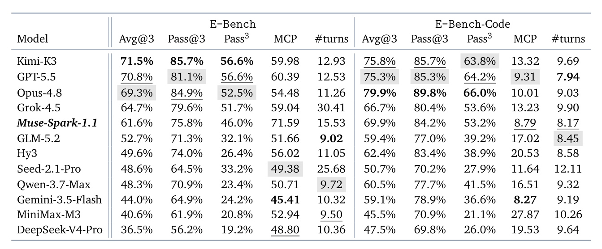
Table 6 | Performance (Avg@3, Pass@3, Pass3) and interaction cost (number of MCP tool calls and agent action turns) of the 11 evaluated models and Muse-Spark-1.1 on the 265 tasks that Muse-Spark-1.1 completes without content-policy-violation failure in any trial, under E-Bench and E-Bench-Code. MCP and turns are per-task averages; tokens are per-task input and output tokens in total. Rows follow the canonical E-Bench Avg@3 order. In each column, the best three values are highlighted in bold, underline, and gray background (highest for performance, lowest for cost).
B. Trajectory Case StudiesB. 轨迹案例研究
We present one Hy3 trajectory case from each of the three E-Bench domains to provide a more intuitive view of our evaluation tasks and the behaviors that the benchmark captures. Each case first shows the original Chinese user query and its English translation. Due to space limitations and for readability, the trajectory visualizations only show the names of tool calls in each round, omitting the system prompt, assistant reasoning content, and assistant content.
我们从 E-Bench 的三个领域各选取一个 Hy3 轨迹案例，以更直观地展示评测任务及基准所捕捉的行为。每个案例先给出原始中文用户请求及其英文翻译。出于篇幅与可读性的考虑，轨迹可视化只展示每轮工具调用的名称，省略系统提示、助手推理内容与助手回复内容。
B.1. Honor of Kings: Directional State UpdatesB.1. 王者荣耀：有向的状态更新
Case 1: Honor of Kings案例 1：王者荣耀
Chinese query. 我是辩护人出击，我的ID是WX00000047。帮我整顿一下好友列表，分两件事做： 先找出最近30天里跟我一起打过对局、共同胜率不低于五成、但还没跟我建立亲密关系的好友，从里面挑亲密度最 高的那个，把他设成星标好友，同时把亲密关系设成「死党」。 然后，把那些最近30天一场都没跟我打过、亲密度不到200、也没有亲密关系的好友，全部删掉。
中文请求。我是辩护人出击，我的ID是WX00000047。帮我整顿一下好友列表，分两件事做：先找出最近30天里跟我一起打过对局、共同胜率不低于五成、但还没跟我建立亲密关系的好友，从里面挑亲密度最高的那个，把他设成星标好友，同时把亲密关系设成「死党」。然后，把那些最近30天一场都没跟我打过、亲密度不到200、也没有亲密关系的好友，全部删掉。
Then, delete all the friends who haven’t played a single match with me in the last 30 days, whose intimacy is below
然后，把过去 30 天里没有和我打过任何一场对局、亲密度低于
This failed trajectory contains 11 model calls, 10 tool-use rounds, and 46 tool calls, with a maximum of 12 parallel tool calls in one round. Hy3 satisfies 7 out of 8 checks, but fails because of one extra state update. The model observes the field a_star_b in the friend-relation tool schema and assumes that it means “I star the other user.” However, in this relation record the current user is on the user_b side, so the correct direction is b_star_a=1. The model later re-checks the relation and writes the correct b_star_a=1, but does not clear the previously written a_star_b=1. Because E-Bench uses
这条失败轨迹包含 11 次模型调用、10 个工具使用轮次与 46 次工具调用，单轮最多 12 个并行工具调用。Hy3 满足 8 项检查中的 7 项，失败仅因一次多余的状态更新。模型注意到好友关系工具模式中的 a_star_b 字段，并假定它表示「我星标对方」；但在这条关系记录中，当前用户处于 user_b 一侧，正确方向应为 b_star_a=1。模型随后复查该关系并写入了正确的 b_star_a=1，却未清除先前写入的 a_star_b=1。由于 E-Bench 采用
field-level exact state diff for verification, this unexpected extra write is sufficient to make the task fail. This case illustrates why our benchmark stresses not only finding the right entities, but also performing precise state-changing operations. Figure 12 shows the corresponding trajectory.
字段级精确状态差异进行校验，这一意外的多余写入便足以令任务失败。该案例说明，我们的基准不仅考验能否找到正确的实体，也考验能否执行精确的状态变更操作。图 12 展示了对应轨迹。
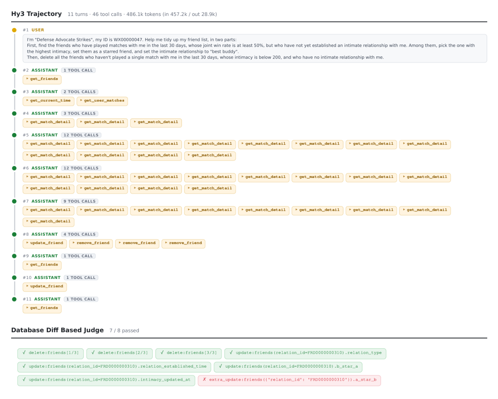
Figure 12 | Hy3 trajectory on the Honor of Kings case. The task is almost completed, but one directional friend-relation field is written incorrectly and remains as an extra state change.
B.2. Tencent Meeting: Long-Chain Multi-Entity OrchestrationB.2. 腾讯会议：长链路多实体编排
Case 2: Tencent Meeting案例 2：腾讯会议
Chinese query. 我是市场营销部渠道运营组的胡伟杰，在深圳鹏创大厦办公。突发渠道事件，要紧急拉一个跨部门 对齐小会，麻烦帮我安排一下。参会人包括我自己，再从我所在的渠道运营组里挑除我之外工龄最长的两位深圳在 职正式员工，另外从产品与设计中心下面的视觉设计组挑工龄最长的那位深圳在职正式员工，一共四个人，我来当 发起人和主持人。时间请在本周4 月21 日周一到4 月25 日周五之间、每天9 点到18 点之间，按半小时为步进扫一 下这四人的日程，挑出大家共同空闲的最早一个连续1 小时时段。会议室就在我们深圳鹏创大厦里找，要普通会议 室，能装下4 个人、容量最小的那间。腾讯会议名字就叫『【紧急】渠道-视觉对齐会』，记得加到日历并发邮件 通知。会议室按上面的时间同步预定好，四位参会人也都各自建一条会议类型的日程，地点填选中的那间会议室， 开启提醒并关联到这场会议。最后再建一个项目群，群名叫『渠道×视觉紧急对齐项目群』，由我从渠道运营组发 起，把这四个人拉进来，群描述写『渠道运营组与视觉设计组的跨部门紧急对齐协作群，用于追踪渠道物料与视觉 设计相关的协同问题，成员为双方工龄最长的核心骨干。』就行。
中文请求。我是市场营销部渠道运营组的胡伟杰，在深圳鹏创大厦办公。突发渠道事件，要紧急拉一个跨部门对齐小会，麻烦帮我安排一下。参会人包括我自己，再从我所在的渠道运营组里挑除我之外工龄最长的两位深圳在职正式员工，另外从产品与设计中心下面的视觉设计组挑工龄最长的那位深圳在职正式员工，一共四个人，我来当发起人和主持人。时间请在本周4 月21 日周一到4 月25 日周五之间、每天9 点到18 点之间，按半小时为步进扫一下这四人的日程，挑出大家共同空闲的最早一个连续1 小时时段。会议室就在我们深圳鹏创大厦里找，要普通会议室，能装下4 个人、容量最小的那间。腾讯会议名字就叫『【紧急】渠道-视觉对齐会』，记得加到日历并发邮件通知。会议室按上面的时间同步预定好，四位参会人也都各自建一条会议类型的日程，地点填选中的那间会议室，开启提醒并关联到这场会议。最后再建一个项目群，群名叫『渠道×视觉紧急对齐项目群』，由我从渠道运营组发起，把这四个人拉进来，群描述写『渠道运营组与视觉设计组的跨部门紧急对齐协作群，用于追踪渠道物料与视觉设计相关的协同问题，成员为双方工龄最长的核心骨干。』就行。
employees from my own Channel Operations Group besides me, and also the most senior Shenzhen-based full-time
除我之外，从我所在的渠道运营组里再挑两位工龄最长的深圳在职正式员工，另外再选出工龄最长的一位深圳在职全职
Urgent Alignment Project Group”, initiated by me from the Channel Operations Group, add these four people into it, and set the group description to: “A cross-department urgent alignment collaboration group between the Channel Operations Group and the Visual Design Group, used to track collaboration issues related to channel materials and
「紧急对齐项目群」，由我从渠道运营组发起，把这四个人拉进来，并把群描述设为：「渠道运营组与视觉设计组之间的跨部门紧急对齐协作群，用于追踪与渠道物料及
This is a representative tool-call-heavy orchestration task. The agent must identify the requester, traverse the organization hierarchy to select attendees under tenure, city, employment-status, and group constraints, scan four calendars in half-hour increments to find the earliest common one-hour slot, select the smallest eligible meeting room, and then cascade a sequence of writes: create the meeting, reserve the room, create linked calendar events for all attendees, create the project group, and add members. Hy3 completes all 15 checks with 94 tool calls across 13 model calls. The trajectory in Figure 3 in the main text demonstrates stable long-chain orchestration over multiple entity types, where each earlier decision constrains subsequent writes.
这是一个典型的工具调用密集型编排任务。智能体必须识别请求者，沿组织层级按工龄、城市、雇佣状态与部门约束挑选参会者，以半小时为步进扫描四份日程、找出最早的共同一小时空档，选定容量最小的合格会议室，然后级联执行一串写入：创建会议、预订会议室、为所有参会者创建关联日程、创建项目群并添加成员。Hy3 以 13 次模型调用、94 次工具调用通过全部 15 项检查。正文图 3 中的轨迹展示了对多种实体类型稳定的长链路编排——每个较早的决策都约束着后续的写入。
B.3. QQ Music: Parallel Tool Invocation and Token CostB.3. QQ 音乐：并行工具调用与 Token 成本
Case 3: QQ Music案例 3：QQ 音乐
English query. I’m user_maqiang. Add all the songs I’ve listened to 5 or more times but haven’t favorited yet, all at
英文请求。我是 user_maqiang。把我听过 5 次及以上但尚未收藏的所有歌曲，全部
This task is semantically simple: find all songs with at least five plays that have not been favorited, and add them to the user’s favorites. However, the API does not provide a batch-favorite operation, so the agent must invoke favorite_song once for each selected song. Hy3 first identifies 38 target songs and then issues all 38 favorite calls in one parallel round, reaching a maximum parallelism of 38. It finishes the task in 5 model calls and 4 tool-use rounds, passing all 38 checks with 139.5K total tokens. Figure 13 shows the Hy3 trajectory.
这个任务在语义上很简单：找出所有播放至少五次且未收藏的歌曲，并把它们加入用户收藏。然而，API 并未提供批量收藏操作，因此智能体必须对每首选中的歌曲各调用一次 favorite_song。Hy3 先识别出 38 首目标歌曲，随后在单个并行轮次中发出全部 38 次收藏调用，最大并行度达到 38；它以 5 次模型调用与 4 个工具使用轮次完成任务，通过全部 38 项检查，总 token 消耗为 139.5K。图 13 展示了 Hy3 的轨迹。
For comparison, the corresponding Grok-4.5 trajectory in Figure 14 also succeeds but has much weaker parallelism: it issues at most 10 tool calls in one round and therefore splits the same favorite operations into several serial batches. This increases the trajectory to 10 model calls and 9 tool-use rounds, consuming 225.5K total tokens, about 1.6× Hy3’s cost. The case provides a concrete instance of the pattern discussed in Section A.1: weaker parallel tool invocation leads to more rounds, repeated context re-processing, and higher token expenditure.
作为对比，图 14 中对应的 Grok-4.5 轨迹同样成功，但并行性弱得多：单轮最多发出 10 次工具调用，因此把同样的收藏操作拆成多个串行批次。这使轨迹增加到 10 次模型调用与 9 个工具使用轮次，总 token 消耗达 225.5K，约为 Hy3 成本的 1.6 倍。该案例为 A.1 节讨论的模式提供了具体实例：更弱的并行工具调用导致更多轮次、重复的上下文再处理与更高的 token 开销。
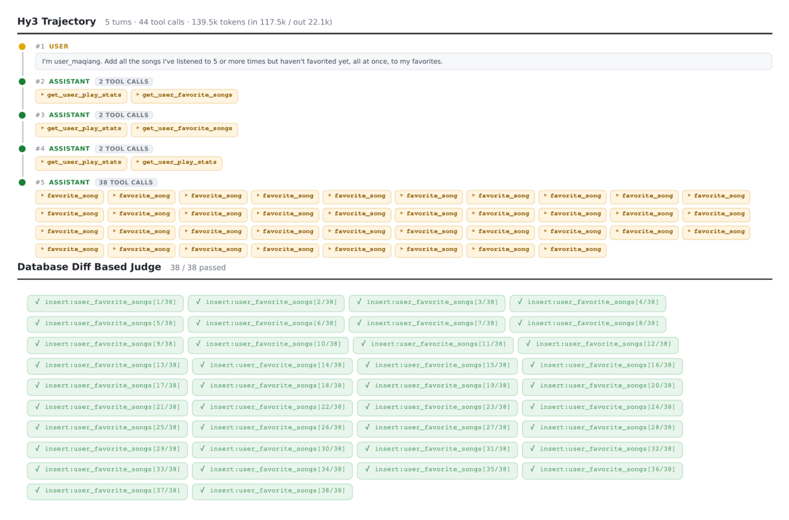
Figure 13 | Hy3 trajectory on the QQ Music case. Hy3 completes the 38 favorite operations in one highly parallel round.
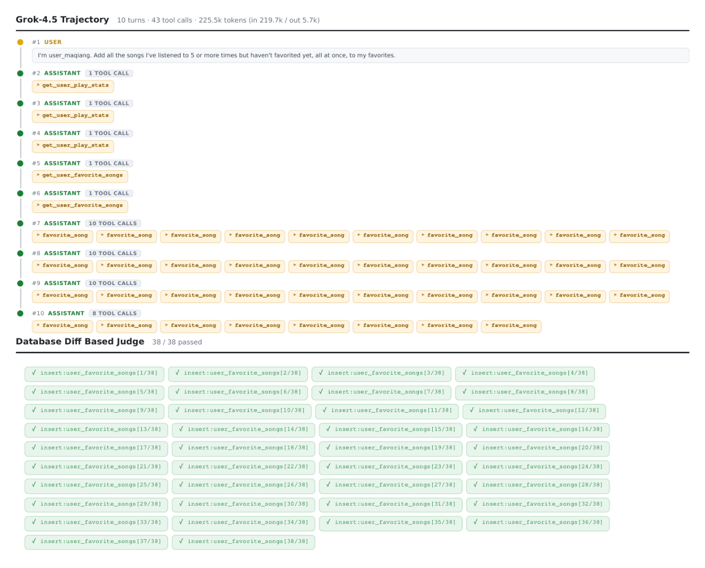
Figure 14 | Grok-4.5 trajectory on the QQ Music case. Grok-4.5 executes the same favorite operations in several smaller batches and consumes substantially more tokens.
Table 1
| Capability What the task requires | HoK | Music | Meeting | Total |
|---|---|---|---|---|
| Full-Data Acquisition Retrieve complete hidden state before acting, | 86 | 92 | 19 | 197 |
| avoiding decisions from partial observations. | ||||
| Multi-Condition Filtering Identify target entities satisfying multiple simul- | 36 | 20 | 16 | 72 |
| taneous constraints or states. | ||||
| Aggregation and Computation Compute counts, rankings, summaries, or other | 56 | 66 | 37 | 159 |
| aggregates over retrieved state. | ||||
| Cross-Step Dependency Coordinate sequential tool calls where later | 78 | 65 | 64 | 207 |
| steps depend on earlier results. | ||||
| Precise Boundary Judgment Make exact threshold, boundary, ranking, capac- | 35 | 15 | 94 | 144 |
| ity, or availability decisions. | ||||
| Cross-Entity Cascade Propagate an operation or decision across re- | 5 | 8 | 93 | 106 |
| lated entity types. |
Table 4
| Capability | E-Bench | E-Bench-Code | Δ Avg@3 | Rel. Δ Avg@3 |
|---|---|---|---|---|
| Multi-Condition Filtering | 51.94% | 62.55% | +10.61% | +20.43% |
| Full-Data Acquisition | 53.55% | 63.65% | +10.11% | +18.88% |
| Aggregation and Computation | 52.85% | 62.30% | +9.45% | +17.88% |
| Cross-Entity Cascade | 60.08% | 68.88% | +8.80% | +14.66% |
| Cross-Step Dependency | 54.11% | 62.79% | +8.68% | +16.05% |
| Precise Boundary Judgment | 57.39% | 64.94% | +7.55% | +13.16% |
Table 6
| E-Bench | E-Bench-Code | |||||||||
|---|---|---|---|---|---|---|---|---|---|---|
| Model | Avg@3 | Pass@3 | Pass3 | MCP | #turns | Avg@3 | Pass@3 | Pass3 | MCP | #turns |
| Kimi-K3 | 71.5% | 85.7% | 56.6% | 59.98 | 12.93 | 75.8% | 85.7% | 63.8% | 13.32 | 9.69 |
| GPT-5.5 | 70.8% | 81.1% | 56.6% | 60.39 | 12.53 | 75.3% | 85.3% | 64.2% | 9.31 | 7.94 |
| Opus-4.8 | 69.3% | 84.9% | 52.5% | 54.48 | 11.26 | 79.9% | 89.8% | 66.0% | 10.01 | 9.03 |
| Grok-4.5 | 64.7% | 79.6% | 51.7% | 59.04 | 30.41 | 66.7% | 80.4% | 53.6% | 13.23 | 9.90 |
| Muse-Spark-1.1 | 61.6% | 75.8% | 46.0% | 71.59 | 15.53 | 69.9% | 84.2% | 53.2% | 8.79 | 8.17 |
| GLM-5.2 | 52.7% | 71.3% | 32.1% | 51.66 | 9.02 | 59.4% | 77.0% | 39.2% | 17.02 | 8.45 |
| Hy3 | 49.6% | 74.0% | 26.4% | 56.02 | 11.05 | 62.4% | 83.4% | 38.9% | 20.53 | 8.58 |
| Seed-2.1-Pro | 48.6% | 64.5% | 33.2% | 49.38 | 25.68 | 50.7% | 70.2% | 27.9% | 11.64 | 12.11 |
| Qwen-3.7-Max | 48.3% | 70.9% | 23.4% | 50.71 | 9.72 | 60.5% | 77.7% | 41.5% | 16.51 | 9.32 |
| Gemini-3.5-Flash | 44.0% | 64.9% | 24.2% | 45.41 | 10.32 | 59.1% | 78.9% | 36.6% | 8.27 | 9.19 |
| MiniMax-M3 | 40.6% | 61.9% | 20.8% | 52.94 | 9.50 | 45.5% | 70.9% | 21.1% | 27.87 | 10.26 |
| DeepSeek-V4-Pro | 36.5% | 56.2% | 19.2% | 48.80 | 10.36 | 47.5% | 69.8% | 26.0% | 19.53 | 9.64 |